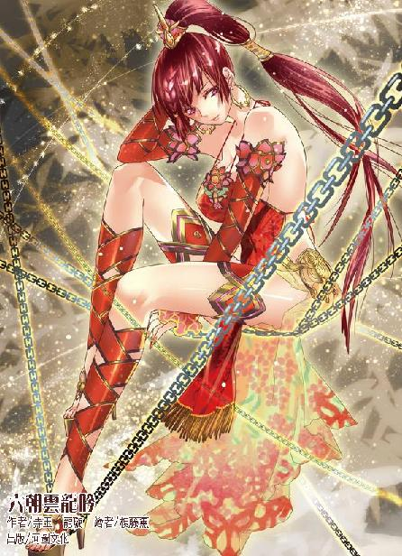

第46集·琉璃天珠
太泉古阵篇（5/7）
出版日期：2013-07-04
【本集内容简介】
周族人在短时间内势大无比，周飞更是率领属下直奔“群仙殿”寻宝，程宗扬一群人却分散四处，凉州盟的人马甚至被追杀将尽！
明明找到小紫劫走的何漪莲和尹馥兰，却不见小紫踪影。众人好不容易趁着抢夺琉璃天珠的乱势擒下莫五，这厮竟承认与碧姬有一腿！
原来小紫一开始的目标就是莫五！难道他才是小紫的生父？
※ ※ ※ ※ ※

封面人物：潘金莲
巨大的桥墩拔地而起，宛如一片望不到尽头的森林。无数桥梁纵横交错，遮蔽了天空。一行人匆匆从桥下穿过，与头顶宏伟的建筑相比，桥梁阴影笼罩下的人类仿佛蝼蚁般渺小。那些人行色匆忙，浑未留意远处有一双阴狠的眼睛正紧紧盯着他们的背影。
盯梢的外姓人像螳螂一样伏着身，悄无声息地穿过草丛，他路过的荒草间，埋着一只不起眼的窨井盖。
阳光透过井盖的栅栏，一直向下延伸，最后落在一片阴暗的地下世界中。
鲜血在冰冷的水泥壁上缓缓流淌，两具尸体一左一右倒在脚边，脸上还残留着惊骇的表情。
程宗扬又重复了一遍，“小紫在哪儿？”
听出他声音里并没有恶意，何漪莲紧张的神情略微放松了些，反问道：“你是谁？”
程宗扬皱起眉，“你紫妈妈没说吗？”
“哪里来的紫妈妈？”何漪莲不悦地说道：“你这般胡言乱语，莫非是个疯子？”
程宗扬摸了摸下巴，自己眼看着小紫趁乱将何漪莲和尹馥兰劫走，才杀出去接应武二，可何漪莲似乎根本不知道小紫的存在。难道出了什么岔子？
“何帮主为何会在这里？”
“怎么？这里不能来吗？”何漪莲微微抬起下巴，“我从太泉古阵进来便在此地。”
怎么可能？程宗扬虽然对太泉古阵远称不上熟悉，但徐君房说过，从太泉古阵传送进来，只会随机出现在前三层。也正是因此，通向第四层的唯一出口奈何桥，才成为探险者难以逾越的天堑。何漪莲是在撒谎？还是别有缘故？
何漪莲忽然道：“你是来寻宝的吗？”
程宗扬打了个哈哈，“那还能是别的吗？”
何漪莲微一沉吟，接着展颜笑道：“你运气真好——我今日一进太泉古阵，便在此地找到一只宝箱，既然大家都是寻宝的，不如一人一半如何？”
“是吗？那我倒要看看了。”
“在这边，随我来吧。”
何漪莲一边走一边像是随意地说道：“我一直在这里寻找宝物，还没有出去过，外面想必很乱吧？”
程宗扬连连点头，“乱得一塌糊涂。”
“方才还要多谢你。”何漪莲道：“没想到那两个奸细竟然包藏祸心，敢暗中算计于我。”
这位洛帮大当家虽然竭力保持镇定，言谈从容不迫，但眼底不时闪过的惊惧却掩也掩藏不住。自己一出手就杀了两个人，虽然是叛徒，毕竟是她手下，她非但只字未提，反而刻意向自己示好，还拿出平分宝物这种诱饵……
程宗扬一肚子的纳闷，随口应道：“正好遇上。路见不平，拔刀相助嘛。”
程宗扬一边说，一边四处打量，目光移动间，不可避免地落在旁边一具白艳的胴体上。尹馥兰身无寸缕，赤条条跟在女主人身后，两条白生生的美腿优雅地迈着步，纤腰柔软地一扭一扭着，丰满的雪臀微微颤动，肉感十足，充满了活色生香的艳态。
这位早早就死了丈夫的教主夫人艳名远播，能一手把持青叶教十余年，也颇有些手段。但此时她脸上带着空洞的笑容，目光茫然，像具美丽的傀儡跟在女主人身后。
“这贱人是天生的淫材儿，你若想用，尽管用便是。”
听到何漪莲用不屑而又随意的口气说着那个裸裎的尤物，着实能撩拨起人心底最深处的欲望。好在程宗扬不是第一次见到尹馥兰，还能把持得住，打着哈哈道：“还是先分了宝贝再说。”
两人一前一后走了片刻，何漪莲停下脚步，指着角落里一只黑漆漆的箱子道：“就是这个了。”
望着那只铁箱，程宗扬终于放下心来，长出了一口气。
何漪莲道：“这箱子有些奇怪，外面看不到锁钥，却怎么也打不开。你若是能把它打开，里面的东西我们各拿一半。”
程宗扬心事一去，整个人都轻松下来，笑道：“一人一半？不好吧。”
何漪莲一颗心直沉下去，面上还竭力保持镇定，微微眯起眼睛道：“你想独吞？”
何漪莲暗自戒备，却听那年轻人厚颜无耻地说道：“箱子本来就是我的。”
何漪莲心下恚怒，“本以为你是正人君子，原来也是个见利忘义的小人！”
“对着救命恩人说这话，你亏心不亏心？”程宗扬道：“何况这箱子是我从临安一路背到苍澜，你以为是无主的？”
“胡说！”
“何帮主，你还没弄明白呢？”程宗扬道：“太泉古阵不是今天才开启，而是前天。这里也不是第三层，而是已经过了奈何桥。何帮主，我看你也不笨啊，怎么连自己少过了两天也不知道呢？”
何漪莲瞠目结舌，心底的震惊再也无法掩饰。当初她在镇上听说尹馥兰沦落到贩卖水果，赶去大加嘲讽。谁知正得意间却突然失去意识，醒来时自己便和尹馥兰待在这处冰冷的洞窟中，身边只有一只根本打不开的铁箱。
何漪莲对昏迷中的经历一无所知，只是惊骇地发现，自己虽然行走如常，身体毫无异样，修为却荡然无存，无论怎么运功，都无法凝聚出哪怕一缕真气。
何漪莲如堕冰窖，再看旁边的尹馥兰修为还在，心下更是慌张。她与尹馥兰结怨已久，这会儿修为尽失，尹馥兰一翻手就能置她于死地。好在尹馥兰被行淫兽咬中，淫毒攻入心脉，神智受创，又被人调教过，虽然修为还在，但失去攻击性，就像一具任人摆布的傀儡。
这样的发现并没有让何漪莲轻松下来，她压下心底的恐慌，好不容易在这迷宫般的地下管道中找到出口，在外面遇到几名周族的人，才知道自己已经置身于太泉古阵之内。听说洛帮也并入突然崛起的周族，何漪莲更加不安，她深知太泉古阵的危险，此时修为已失，更不敢在外面多加停留，只匆忙留下暗记，希望有忠心的手下赶来救援。
结果来的两名手下却被那个莫名其妙的年轻人利落地斩杀当场，还告诉自己他们心怀鬼胎。对何漪莲而言，那两名手下是忠是奸根本无关紧要，要紧的是怎么保障自己的安全——尹馥兰的下场便是前车之鉴。自己奚落她时快意非常，但一想到自己沦落到她的境地，何漪莲便不寒而栗。
那个年轻人一脸怜惘地看着她，用同情的口气道：“我如果告诉你真相，恐怕你也不信。这样吧，大路朝天，各走一边。你爱去哪儿去哪儿。”
何漪莲一言不发，转身就走。
程宗扬爽快地放开手，做了个送行的手势。他已经有十成把握，这两个女人都是被死丫头扔在这儿的。被死丫头选中的东西，还没有逃走的先例，何漪莲再强十倍，也破不了这个例。
不过尹馥兰却被他留了下来，“光着屁股乱走很危险的。你紫妈妈要是知道自己的东西被人乱动，少不了会发脾气，还是跟我走吧。”
何漪莲顾不得理会，年轻人那番话，让她越想越是惊惶。匆匆走过甬道，她猛然停下脚步，仿佛被一桶冰水兜头浇下，浑身发冷。
一缕阳光从头顶的窨井透下，在地上留下一片耀眼的光斑。那两具尸体躺在冰凉的水泥地上，隐约能看到一只野狗大小的生物，正伏在尸体上抱着一只头颅吸食得叽叽作响。
何漪莲一颗心几乎跳出了腔子，忽然那只野狗抬起头，露出口中两排挂满血肉的利齿，豆大的眼睛散发出蓝汪汪的光泽，嘴巴尖尖的，却是一只变异的老鼠。
它昂起前爪，接着腋下弹出两片翅膀般的肉膜，在空中一鼓，“嗡”的一声，蝙蝠般腾空飞来。
何漪莲尖叫一声，反身逃开。
程宗扬正发愁怎么给尹馥兰遮住身体，听到何漪莲这声尖叫连腔调都变了，立即拔刀跃起。
何漪莲踉跄着跑来，忽然身体一紧，衣衫被鼠妖的利爪扯住，接着“嗤”地撕开。
看到那只长了翅膀的巨鼠，程宗扬也倒抽一口凉气，他一把拉住何漪莲，右手挥刀斩向鼠妖的尖牙。
谁知变异鼠猛地一旋，贴着刀锋绕了个圈，调头扑向程宗扬的面门。这一下变招比寻常的武林好手还来得迅猛，程宗扬惊出一声冷汗，急忙斜身向后退去，紧接着雷射刀闪电般劈出，重重斩在变异鼠一侧的膜翅上。这一刀又狠又准，变异鼠跌在地上，肢体蜷曲着发出尖锐的叫声。
程宗扬一口气还没松开，远处传来一阵窸窸窣窣的细微响动，随即黑暗中浮现出一层发蓝的眼睛。
程宗扬一刀刺穿那只受伤的变异鼠，鼠腹中掉落出来的人牙让他一阵作呕，赶紧挥刀将鼠尸挑开，喝道：“走！”
何漪莲惊魂未定，尹馥兰也本能地尖叫起来，周围都是光溜溜的水泥管，根本无处藏身。
“上边！”
程宗扬一把扯起何漪莲，把她推到上方一条支管中。尹馥兰神智受创，修为尚在，被程宗扬一扶，也裸着身子爬进管道口。
空气中传来“嗡嗡”的响声，一群变异鼠鼓动着膜翅飞来，还有些半路停下来，趴在两具尸体上大肆啃嚼。
程宗扬抢过铁箱，刚准备跃上去躲避，一只变异鼠已经飞到背后，尖利的爪子几乎钩到背包。
程宗扬把铁箱扔进管口，一手攀住管道下缘，一边返身出刀，将那只变异鼠凌空劈落。硕大的鼠妖蜂拥而至，不逊于刀锋的尖爪利齿雨点般袭来。
管道中露出两女苍白的面孔，何漪莲目光闪动，似乎在犹豫是不是要趁机逃开，片刻后断然道：“拉他！”
尹馥兰听话地挽住程宗扬的手掌，把他拉进管道。一只变异鼠猛扑进来，尖爪钩住她的手臂，在她雪白的手臂上留下三道血痕。尹馥兰吃痛地低叫一声，本能地松开手。程宗扬抬手一撑，半身钻进管道，接着管口爆出一团刀光，将几只扑来的变异鼠尽数绞杀。
程宗扬肩上被那头陀的竹杖刺伤，伤口本来已经愈合，这时一使力，伤口又重新迸裂，热血瞬时涌出染红了衣物。
变异的鼠妖越来越多，一眼看去，尽是飞舞的膜翅和滴血的利齿。程宗扬暗暗叫苦，不知道这片地下世界有多少变异的鼠妖，这么一波一波层出不穷，用不了多久就能把自己撕成碎片。
忽然“嗒”的一声，何漪莲用尽手段也无法打开的铁箱张开一道缝隙，伸出一条尖细的触肢。那条触肢灵巧地钻出箱子，大步向前迈去。接着从后面的箱子里滚出一堆各种各样的零件，追赶着咯咯作响地拼在触肢上。触肢一边走动，一边变得越来越完整，却是一只巨大的蜘蛛。
蜘蛛细长的肢体变幻出不可思议的形状，紧贴着程宗扬的身体钻出洞口，接着八条触肢同时张开，仿佛一张巨网扣在管道入口上。袭来的鼠妖撞在上面，发出金属碰撞的声响，蜘蛛看似纤细的触肢却纹丝未动。
身上压力一轻，程宗扬不敢多停，匆忙裹住肩头的伤口，与两女一同往管道深处爬去。回头看时，那只还未全部完工的机械蜘蛛牢牢挡在管道口，将变异的鼠妖尽数挡在外面，接着腹下弹出一根腹针，从一只鼠妖眼眶刺入，带着一串鲜血从它脑后穿出。
程宗扬松了口气，这只铁箱肯定是小紫有意留在此处，免得自己的猎物撞上什么危险。
程宗扬一边爬，一边定下心来，仔细打量着眼前的管道。这条下水道仅有半人高，只能伏着身爬行，好在洞内空气并不污浊，按走向来看前面是上游，如果顺利的话，应该能找到出口。
※ ※ ※ ※ ※
桥墩的阴影下倒伏着几具尸体，他们随身的行囊、衣袋都被利器划开，从头到脚被人洗劫一空。
一幢废弃建筑内，宋三道：“那位周少主似乎找到了什么东西，眼下正召集人手赶往第十层。”
莫爷半闭着眼睛，慢悠悠道：“太泉古阵第十层……你们也进去过。里面到底有些什么？”
“因为有力士守着，以前能过奈何桥的次数都不多。小的在苍澜这么多年，也只进去过六七次。第十层有座大山，有个山洞能进到山里，镇上的本地人说叫魔墟，里面颇有些妖物。托莫爷的福，小的上次进去过，那个姓尹的妇人便是从食人的巨藤里捡来的。魔墟地方甚大，即便能进去，想把里面找遍也要穷年累月的工夫。”
莫爷道：“终究还是人少……难得有这么多人进来，只盼着老天开眼，能多留些人下来。”
宋三笑道：“借莫爷吉言，这次怕是要全留下来了。”
莫爷一声长叹，“人多也犯愁啊。苍澜这地方……那些行商也是惜命的。”
环绕苍澜的浓雾成为一道天然屏障，寻常人身体略差一些，过趟雾障便免不得大病一场。因此即使随便一件货物都能在镇上卖出几十倍的高价，前来贩卖的商人也寥寥无几。
“若不是莫爷，哪里有我们的今天？”宋三迟疑了一下，低声道：“小的听说，这次来的有家广源行……”
莫爷连连摇手，“沾不得沾不得。莫忘了，咱们被老天爷留在此地，都是见不得光的。”
宋三叉手道：“是。”
莫爷起身踱着步，慢慢道：“我这两日心里总有些不安定……好像有人在暗地里盯着咱们。”
宋三道：“莫爷，太泉古阵是咱们的地盘，只有咱们盯别人，哪儿有人能盯咱们的？”
“话是这么说……”莫爷沉默片刻，“那个奉琼仙子有下落了吗？”
“镇上已经找遍了，都没有踪影。”宋三道：“只怕她逃出去，引来瑶池宗的人。”
莫爷用手指着他，一边摇头道：“你个宋三啊——她若能逃出去，咱们求之不得啊！”
宋三省悟过来，“可不是嘛！”
他只顾着忧心朱殷逃脱的后果，却忘了在太泉古阵遭遇诅咒的人，还没有逃离雾障的例子。如果朱殷真能逃出去，镇上的外姓人少不得都要弹冠相庆。
宋三笑道：“让莫爷这么一说，我倒真盼着她能逃出去了。”
一名汉子半身染血，匆匆进来，拱手道：“回莫爷，打听出来了，周族去的就是魔墟。”
莫爷道：“那一行人呢？”
那汉子道：“暂时没有消息。”
宋三补充道：“有风声说也在这古阵之内。”
莫爷沉吟良久，然后道：“太泉古阵的好处，怎么能少了咱们一份？有人便是猛龙，也要看咱们这些地头蛇答不答应！”
※ ※ ※ ※ ※
程宗扬靠在水泥墙上，一边包扎臂上的伤口，一边道：“算你命大，再走远点儿就被鼠妖撕碎了。”
接连两次被人救下性命，何漪莲也不好再横眉冷对，低声道：“多谢。”
程宗扬忽然道：“广源行的人为什么要除掉你们？”
何漪莲半晌才道：“也许是奴家不合他们心意。”
“广源行是做什么的？”
“广源行是晴州的大商家，主营丝帛、药材。因为有大批货物要通过洛水，当日找到先父组建了洛帮。先父殁后，洛帮的生意便由奴家打理。有什么不好摆平的事，都由庞执事处置。帮中的收益有六成交给行中。”何漪莲咬了咬唇瓣，“姓庞的多次纠缠奴家，都被奴家设法回避了，多半心里早恨上了奴家。”
“他倒是不怕出事啊。兔子还不吃窝边草呢。”
何漪莲苦笑道：“我们这些帮会都是靠着行中扶持，原本为着行里的生意也不至如此，可偏有些贱人投怀送抱……”她怨怒地横了尹馥兰一眼，“反让那些人看轻了我等。”
程宗扬看了看尹馥兰，“是吗？”
何漪莲余恨难平，“这贱人自甘下贱便也罢了，还撺掇那些人为难我们。仅奴家知道的，这些年就因为这贱人的挑拨，被他们得手的便有好几个。”
难怪何漪莲与尹馥兰势同水火，程宗扬道：“听说你和岳鹏举有点交情？”
何漪莲沉默多时，轻叹道：“这么多年，我连他长什么样子都记不清了。”
“那你来是为什么？”
“只是想知道他是不是还在世吧。”何漪莲道：“那时我刚执掌洛帮，他帮了我很多。”
程宗扬看得出何漪莲并不恨他，但也没有多少眷恋之情。他们之间，也许更像一桩交易。但在这件事上，自己实在没资格去笑话岳鸟人，自己上过的女人，一多半也是交易。
水泥管道中忽然传来一阵金属摩擦的细密碎响，不多时，一只巨大的蜘蛛背着铁箱爬来。黑暗中，蜘蛛准确地爬到两女脚边，放下铁箱，接着箱盖“嗒”地打开，蜘蛛收拢细长的触肢钻进箱内，随即分解成零件，回归原位。
何漪莲看得目瞪口呆，怔怔道：“这是什么？”
“你紫妈妈的小玩具。”
“紫妈妈是谁？”
“怎么说呢……”程宗扬有点头痛，思索了一会儿才道：“反正你把她当神那样敬着，准没错。”
“她年纪很大吗？脾气是不是很古怪？”
程宗扬笑道：“见了她，你就知道了。其实那位紫妈妈也不难伺候，只要好好陪她玩，让她开心，至少比你落在广源行手里强些。”
何漪莲心下权衡片刻，“服侍她便也罢了……”说着横了尹馥兰一眼，咬牙道：“但不能便宜了这个贱人！”
※ ※ ※ ※ ※
院角的花坛旁，一块不起眼的窨井盖晃动几下，然后被人推开。程宗扬从井口钻了出来，一边肆意呼吸着外面的新鲜空气，一边看着四周。
面前是一个小小的院落，院中垒了一座假山，墙角栽着一丛翠竹，竹林旁摆着一张石桌，几只石凳。天际一弯新月已过中天，淡淡的月光映着地上一条黑色的鹅卵石小径。小径尽头是一幢木屋，规模虽然不大，但结构精致，式样雅洁，月光下仿佛沐浴着一层神圣的光辉。
这一看就是藏宝贝的地方，程宗扬精神一振，三步并作两步掠进木屋，没等他奇怪这么神圣的地方居然连门都没有，便是一声大骂：“干！”
那木屋里面看起来更圣洁——四壁铺着白色的瓷砖，一尘不染，靠墙一排格子间，每间放着一只雪白的瓷器，曲线优美，形制大气，后面还配着精致的瓷制水箱……
望着那些抽水马桶，程宗扬脸上什么表情都有。虽然自己沿着下水道一路爬过来，爬到卫生间也不算很奇怪的事，虽然无论马桶还是下水道都干净得像没有用过一样，可一想到自己是顺着厕所的下水道爬过来的，心里还是一阵一阵的别扭。
既然来了也不能白来，程宗扬索性拉开裤子，对着马桶飞流直下，先痛快一把再说。他一边放水，一边四下打量，这卫生间显然也被人光顾过，除了马桶没有搬走，其他早被洗劫一空——连纸都没留下一卷。
正郁闷间，外面传来一声低呼，“有水声！”
程宗扬刚放了一半的水就那么硬生生停住。那声音虽远，但因为是夜间，听得分外清楚，就在墙外。
两名汉子逾墙而入，警惕地看着周围，然后嘀咕道：“你没看错吧？”
“错不了，就是那个使枪的小子。一晃就没影儿了。”
“小心点。把人赶走就行，保命要紧。”
庭院并不大，两人看了一圈，并没有发现异状。其中一个忍不住道：“周少主是不是捞到什么宝贝了？”
“谁知道呢？”
“要不是找到宝贝，严先生会叫咱们清人？”
“你别说，周少主还真有点本事，原本大伙都进不来的，周少主就能找出一条路来。你听说了没？上次有人在里边见过赤阳圣果……”
“少说几句吧。”那人道：“老实跟着周少主就对了。有好处少不了咱们一份，吃不到肉也能喝点汤。”
两人闭上嘴，摸进木屋，随即也被四壁雪白的圣洁场面给震惊了一把。没等他们清醒过来，身后人影一闪，唯一的出口已经被人挡住。
程宗扬一手提刀指着两人，喝道：“扔掉武器，双手抱头，原地蹲下！”
右边一名汉子大喝一声：“哪里来的蝥贼！敢招惹我们周族！让开！”说着挥刀劈来。
看他出刀的力道，修为在四级上下，也算是江湖好手，但和现在的程宗扬比起来就有些不够看了。交手不过数招，两个人就成了一对滚地葫芦。好在程宗扬没打算要他们性命，只用了拳脚。
那两人刚加入周族，出身也只是江湖上的小帮会，完全没必要给一个还不熟的人卖命，见过那人厉害，连忙抱着头老实蹲下，口中道：“大侠饶命！”
“你们周少主呢？”
两人毫不犹豫地答道：“去山上了。”
“什么山上？”
两人争着答道：“旁边的火山！”
“火焰山！”
程宗扬打量了他们几眼，忽然一笑，“正好两个呢，巧了……你们两个，把衣服脱了！”
两人一头雾水地面面相觑，过了一会儿其中一个明白过来，顿时浑身一抖，颤声道：“大侠……小的玩不了这调调啊……”
“少废话！要命还是要衣服！”
“饶命啊大侠！”
另一个带着哭腔道：“小的这就脱……”
最外面的角落里，一扇厕门缓缓打开一线，宗泽握着长枪，一脸困惑地眯着眼往外张望。看清外面的人影，顿时也打了个寒战。
那个姓程的变态提着刀，威逼两个大汉脱衣服，脸上色眯眯的神情一看就令人作呕。等两人脱下外衣，程变态突然出手，“咣咣”两拳把人打晕，然后狞笑着解开裤子……
宗泽浑身的毛发都一根根竖了起来，他一脚踹飞厕门，没命地狂奔出去，一边跑一边不断弯下腰，发出呕吐的声音。
程宗扬剩的一半还没尿出来就被吓了回去。自己也实在大意了，竟然没留意厕所里还有个大活人，可那家伙至于逃那么快吗？
程宗扬废了半天劲才把该尿的尿完，然后把两个半裸的大汉踢到一边，捡起两人的衣服溜了出去。
衣衫上还有汗味，但何漪莲顾不了许多，接过来便披在身上。程宗扬松了口气，这一路尹馥兰光着身子也就算了，何漪莲的衣衫也在挣扎中被鼠妖撕破，不时露出春光，看得人心猿意马，实在是太考验自己的定力了。那两名大汉也算走运，自己为了两身完整的衣服，连刀都没使。
“你们在这儿等着，我出去看看。”
何漪莲道：“这是什么地方？”
程宗扬琢磨了一下，“可能是化粪池吧。”
望着这个深在地下，四四方方毫无异味的洞窟，何漪莲都不知道自己该是什么表情。
“这儿可能是唯一安全的地方了。”程宗扬道：“外面情形有些不对，周族的人好像正在清场，不知道在搞什么。你们在这儿小心些，箱子拿好。”
何漪莲不再开口，只小心看了眼地上的铁箱。
※ ※ ※ ※ ※
夜色下的小镇一片静谧，连细碎的虫豸声都听不到。远处隐约能看到一座山峰在夜色中勾勒出圆锥的形状，顶部泛着火焰般暗红的光泽。程宗扬边走边看，心里越来越奇怪。这里的建筑和人类世界很相似，但高度差不多矮了一半，倒像是大号的儿童乐园，可宽度又和正常人类使用的差不多，按照这样的比例，除非镇上的居民都是爬行动物才说得过去。可爬行动物需要用卫生间吗？
程宗扬看了半天也没理出头绪，只觉得自己的智商都不够用了，索性不去理会。这座小镇对五人组的其他几位来说都不陌生，萧遥逸撞墙，武二郎晕车，小紫找人，朱老头碰见焚老鬼——都在这镇子附近。但程宗扬是被赤阳藤直接拖进魔墟的，没有经过小镇，出来时他又刚捡到一部摄像机，全部心神都放在那段看似平常的影像上，连怎么离开的太泉古阵都不知道，对小镇更是全无印象。
听说周飞去爬火山，程宗扬又动了心思，不管那个大弁韩的小子究竟是不是穿越者，总要看一眼才能放心。反正这会儿也没有方向，不如赶去看看。
程宗扬重新检查了一下肩上的伤口，然后往火山赶去。刚到山脚，就碰到几名外姓人，有的提刀有的扛棒，活像一群刚抢了唐僧肉的小妖，正兴冲冲往山上爬。
至于中间的唐僧，实在不够体面——朱老头被捆得跟狗一样，让人用一根杠子穿过手脚，绑了个四蹄倒攒的花样，一路“哎哟哎哟”叫个不停。旁边的徐君房倒也想叫，可那些外姓人都是在镇上混的，知道他一身功夫全在嘴上，不知从哪儿捡了块破布，把他嘴巴堵了个结实，生生废了他的功夫。
程宗扬远远瞧了两眼，虽然那帮人并没有打过照面的熟面孔，也不敢大意，他先把帆布牛仔服翻过来穿上，找了块帕子把脸一蒙，先潜到前面，然后大模大样地走过去，哑着嗓子道：“这是我们大周族的地盘！你们几个，干什么的！”
为首一名汉子堆起笑脸，“原来是周族的好汉。我们是镇上的人，抓了两个偷东西的贼，这会儿就走。”
徐君房眼尖，虽然蒙着脸，还是一眼认出了程宗扬，在杠子上使劲扭动。朱老头“哎哎”叫了两声，可没等他开口，就被人抽了个耳光，顺势按住嘴巴。两人一齐眼巴巴看着程宗扬，没想到那小子“哦”了一声，然后转身就走，丝毫没有救人的意思。
两人对视一眼，接着玩命地折腾起来，最后挨了几记拳脚才老实。
山脚只有一条路，那些外姓人虽然想避人耳目，总不能把那个怪模怪样的周族人灭口，只能硬着头皮跟在后面。没想到程宗扬走了几步又折了回来，很八卦地问道：“这两个哪儿来的？偷什么东西了？”
这一片区域都被周族控制着，外姓人虽然不想搭理他，也不好翻脸，耐着性子道：“他们是外边来的，在镇上偷了不少东西，躲到太泉古阵来避风头。这两个家伙奸滑得很，好不容易才逮到。”
程宗扬深以为然地说道：“这两个一看就不是好东西！尤其是这个老家伙！贼眉鼠眼，看着都恨得慌！”说着“咣咣”踢了两脚。
朱老头两眼一翻，像是晕了过去。
有人不放心地说道：“莫爷还等着问话呢，这老东西不会是死了吧？”
“不会吧？刚才跑的时候还挺精神的……”
“装的！”程宗扬道：“有凉水没有？没有啊？哪位有尿？朝这老家伙头上来一泡，保证醒得快！……你瞧，我说的吧！”
朱老头赶紧睁开眼，嘴里“唔唔”叫着，表示自己年纪虽然大了些，可精神还好。
这些外姓人本来是进来打探消息，意外撞见朱老头和徐君房两个鬼鬼祟祟，不知干些什么勾当，顺手逮住也算立了一功。这边周族清场也没有大开杀戒，只是把无关的众人驱离出去。几名外姓人看无机可趁，只好出来，没想到会遇上这么个多管闲事的周族人。
为首的汉子笑哈哈道：“这位周族的好汉，大半夜的，怎么还蒙着面呢？”
“我们大周族分明暗两派，我们暗派的精英轻易都不露出面孔。”
那汉子恍然大悟，“原来如此，失敬！失敬！”
程宗扬想看死老头玩什么花样，外姓人想从他口中套出周族的底细，双方各怀鬼胎，你一言我一语，越说越是热络。程宗扬知无不言，言无不尽，不知道的也照说不误。就这一会儿的工夫，外姓人从他口中听到的周族内幕比此前全加起来都多。眼看离周族控制的小镇越来越远，那个周族的大嘴巴竟然还没有离开的意思，几名外姓人互相使着眼色，都想着干脆把这个棒槌一起弄回去得了。
还没来得及动手，耳边忽然传来一阵打斗声，几名外姓人对视一眼，同时加快脚步。
一块巨石矗立在山侧，形成一个小小的山坳，里面竟然挤了数十人，密密麻麻围成一个圈子。
左彤芝秀发散乱，臂上的彩带也被利刃划破。她的凉州盟原本人多势众，但当时形势混乱，众人并没有聚在一起，进入太泉古阵之后被分散到各处。左彤芝在阵中游荡多时，好不容易才与铁马堂一行会合，结果又撞上一群外姓人。
双方在外面已经结怨，那些外姓人又存心不留活口，当下一场恶斗，铁马堂的好汉死伤惨重，左彤芝带着众人边战边退，这时只剩下铁中宝和两名堂中的弟兄拼死支撑。
在场的外姓人足有二三十人，已经稳操胜券。远处还有一群人围观，却是周族人马，为首一个双手抱臂，面带傲色，正是周族少主周飞。
左彤芝扬声道：“周少主！我凉州盟与周族有盟友之谊！少主便坐视我等遭此毒手吗？”
周飞傲然一笑，“我周飞一向恩怨分明，你们当初虚情假义，无非是看不起我周飞！现在把盟友挂在嘴边，又想利用我大周族！我周飞心里自有杆秤，岂是受欺之辈！”
左彤芝忍气吞声地说道：“少主教训的是——但即便抛开盟友不提，周少主身为白道豪侠，怎能见死不救？”
“你以为我周飞是只会发正义感的滥好人吗？”周飞道：“我周飞眼中不揉沙子，从来是帮亲不帮理！你们就算占着十成的道理，也休想让我的亲族为你们卖命！”
铁中宝吼道：“左护法！休跟那贼厮鸟啰嗦！我老铁把命扔在这儿了！护法快走！”
“好大的胆子，竟敢辱骂于我！”周飞冷声道：“便让我给你一点教训！”说着猱身上前，长枪一展，朝铁中宝面门刺去。
铁中宝力敌两人，早已左支右绌，眼见长枪袭来，只能勉强斜身避开。谁知周飞那一枪只是一个虚招，中途突然一摆，重重打在铁中宝胸侧。
铁中宝胸前空门大露，被这一枪扫了结实，“噗”地喷出一口鲜血，三根肋骨齐齐折断。
周族众人齐声喝彩，“少主教训得好！”
周飞冷笑道：“井底之蛙也敢挑衅！待我废了你一手一脚，看你还能猖狂到几时！”
周飞提枪欲刺，忽然耳畔传来一声空气被急剧压缩的爆响，接着一道乌光从巨石上呼啸着抡下，将他满蓄真气的大霸王之枪震得飞开。
一条猛虎般的大汉闯进场内，铁轨一个横扫，将众人的攻势尽数格开。武二郎牛仔服绑在腰间，赤裸的上身肌肉虬结，犹如铜浇铁铸，威风凛凛，只不过转过身一看，宽阔的背脊布满了被指甲掐出的抓痕。
“你个死二郎！”白仙儿顿足道：“还以为你是个心里有数的！原来也是没脑筋的莽货！他们那么多人你便闯出去，心里还有没有我！”
“死八婆！你给我闭嘴！”
“我年纪轻轻你便让我守寡，我不活了……”
武二郎脸黑得跟锅底一样，头一扭，装作没听见。
铁中宝喜极而泣，叫了一声：“二哥！咳咳咳……”说着剧烈地咳嗽起来。
左彤芝绝处逢生，也不由喜出望外，说道：“多谢二爷援手。”
武二郎道：“你们歇着！”接着跨前一步，提声道：“各位！这几个是我武二的兄弟！朋友们给个面子，算二爷欠你们一个情。”
宋三从人群中出来，“白武族的武二爷啊……这个面子好说，既然二爷发话了，人尽管走！只要二爷说一句：往后留在苍澜跟咱们搭伙。怎么样？”
武二郎哈哈笑道：“说句话那还不容易？只不过二爷那么一说，你们那么一听，太儿戏了些。不如按道上规矩……”武二郎从腰间拔出一只钱袋，“四百金铢，买四条命，这价钱也瞧得过了吧？”
宋三笑道：“谁不知道武二爷一诺千金，只要二爷说的话，没有不算数的，比金铢可值钱得多。”
武二掖起钱袋，将铁轨往面前一插，喝道：“手底下见真章！”
宋三却喝退众人，“住手！”
他一溜小跑赶到周飞面前，抱拳唱了个肥诺，满脸堆笑地说道：“周少主惊才绝艳，让小的大开眼界，方知天外有天、人外有人，少主的天才小的连拍马也赶不上——今日这事，要不少主拿个主意？”
周飞冷哼一声，“我周飞生平最恨满口阿谀之辞的佞徒！”
周族众人齐声道：“少主英明！”
周飞持枪而立，鄙夷地看着那些满口奉承之辞的外姓人，然后道：“道不同不相为谋，我们走！”
以宋三的狡诈，这会儿也没反应过来，后边的外姓人倒是炸锅了。
“后面马屁拍得震天响，还假迷三道地撇清，这也太矫情了吧？”
“哪儿矫情了？你没看到吗，那小子特认真。”
“你是说这小子当真的？不会这么蠢吧？我还以为他这是厚颜无耻、为人奸滑。”
“这种蠢人，你说他奸滑，那是夸他。说他一句无耻，他能沾沾自喜大半年的，做梦都能笑醒。”
“瞎说的吧？世上还有这号人？”
“少见多怪……”
宋三收拾心情，转头对武二郎道：“二爷这次光临小镇，不知道是忙些什么呢？难道也是为了姓岳的？不对吧，二爷和那人可没什么交情啊。”
圈外有人笑道：“三哥明知故问啊，二爷肯定是追着鹤羽剑姬来的。”
“还有这说辞？”
“咱们在这儿消息不灵通，我还是听外面人当热闹说的。据说江湖上都传遍了，光明观堂那位鹤羽剑姬其实是白武族的小媳妇，武家大爷指腹为婚的婆娘，武二爷的嫡亲嫂子。”
“这交情够深啊。”
“可不是嘛。有道是好吃不如饺子，好玩不如嫂子。二爷为了这个娇滴滴的小嫂子，害了武家大爷——噗！”
武二郎一步跨出丈许，提起拳头打在那人下巴上，把那人打得横飞出去，人在半空就吐出半截舌头和十几颗牙齿。
宋三一声令下，外姓人狂呼着一窝蜂朝武二杀去。武二郎的铁轨凶猛异常，无人能挡，可他要护着左彤芝、铁中宝等人，总不能自顾自地杀出去。刚突出数步，就又被人围上。那些外姓人也不与他硬拼，只一味缠斗，摆明是仗着人多势众，等耗到武二力竭再来打死老虎。
“死二郎！偏你要充好汉！这些人没一个好东西，你偏要救他们。奴家若是死了，做鬼也不放过你……”
激烈的打斗中，夹杂着白仙儿的数落、抱怨，刚开始外姓人还当笑话看，渐渐觉得不对味儿起来。白仙儿的啰嗦让武二无名火直冒三丈，战斗力急剧飙升，而且越战越勇。
宋三当机立断，“干掉那个小贱人！”
白仙儿跺脚道：“二郎！有人骂我！”
有人讥笑道：“这丫头还撒娇呢……骂你怎么了？二爷不也骂你吗？”
白仙儿杏眼圆瞪，“二郎骂便骂了，他还睡我呢！你也敢吗？”
那人本来想讨句便宜，一看武二的眼神，满嘴的口水顿时都成了冷汗，险些尿湿了裤子，赶紧头一缩躲到后面。
程宗扬赶到时，看到的就是这么热闹的场面：几十名外姓人里三层外三层围成一团，武二郎带着左彤芝等人在人群中左冲右突，两米长的铁轨在他手中左右翻飞，所向披靡。但这还不算最热闹的，最热闹的是白仙儿。那丫头一会儿和武二拌嘴，一会儿骂左彤芝和铁中宝这些人没良心，还要她家二郎相救，一会儿又和外姓人吵嘴，战斗力之强悍，风格之凶猛令人侧目。
赶来的外姓人见同伴吃紧，把杠子一丢，立刻抽刀上阵，只留下一个人看管俘虏。程宗扬看得眼花缭乱，一时间都不知道该怎么插手。
“啧啧！啧啧！这丫头生得挺俏，可这五行——缺心眼吧？”
程宗扬扭头一看，死老头拢着手蹲在自己身后，一脸猥琐地探头探脑，刚才看管他的汉子已经倒在一旁，不省人事。
“老头儿，你捣什么鬼呢？被人绑着好玩是吧？”
朱老头道：“你知道啥？大爷是懒得走路，让人抬着，又省力又体面！”
“……你这也太体面了吧！死猪才这么绑呢！”
“唔唔……”
程宗扬一扭头，看到徐君房玩命地朝自己瞪眼，赶紧帮他把堵嘴的破布拿出来。
徐君房喘了两口气，然后道：“不好了！紫姑娘被抓走了！”
程宗扬脑子“嗡”的一声，揪着徐君房的领子道：“怎么回事？”
“咳咳……紫姑娘被守阵力士给抓住了。我本来要去救的，这老头儿拽着我就跑，结果碰上了镇上那群外姓人。”
程宗扬望着朱老头道：“你们遇见小紫了？”
“可不是嘛！”朱老头一脸的痛心疾首，“那丫头坑人啊！打着手势让我们往另一边跑，我还当她好心呢，谁知道外姓人就在那边等着，活活把我们往虎口里送啊。小程子，你可得为大爷报仇啊……”
一看朱老头的德性，程宗扬立刻定下心来。朱老头一大把年纪了，就指望小紫能传他的衣钵，死丫头真要有事，他跑得比自己都快。徐君房不知内情，看到死丫头旁边有个守阵力士就慌了神，其实太泉古阵里，死丫头最不怕的就是那些机械守卫了。
程宗扬道：“紫丫头是让你引开这些外姓人吧？”
朱老头哼叽两声，嘟囔道：“八成可能好像也许吧……”
“那你还等什么呢？赶紧把他们引开，我好去接二爷出来。”
朱老头居然真去了，老东西拢着手溜过去，远远跳着脚道：“放开那个大个儿！有本事冲我来！”
双方正打得热火朝天，谁顾得上理他呀？朱老头一看，屁颠屁颠就回来了，嘴里还抱怨：“你瞧这事闹的，没人理啊。”
程宗扬一脸的没好气，“死老头，你还能再猥琐点儿吗？”
人群中霹雳般一声暴喝，武二郎将一名汉子打得横飞出来。眼看那人要在山石上撞得头颅迸裂，一只手蓦然伸出，在他颈后一托，卸去力道。
那人身材不高，衣衫虽然和周围的外姓人一样破烂，但洗得干干净净，眉眼间也少了一分阴戾。
宋三一怔，急忙迎过去道：“戴爷！怎么不在莫爷身边守着？”
那人道：“莫爷已经进去了，身边有人扈卫。”说着他扶剑而出，淡淡道：“在下戴松原。”
一番激斗，双方各有损伤，那些外姓人退开几步，略作喘息。武二盯着那名汉子，臂上肌肉隆起，蓄势待发。忽然背后传来一声低低惊呼，左彤芝道：“莫非是渊泉宗的剑公子戴松原？”
戴松原微微一怔，“居然还有人记得我。”
左彤芝客气地说道：“奴家甫入宗门，便听说剑公子才华横溢，年过而立便上窥通幽之境，是渊泉宗不世出的英才。但二十年前游历天下，便不闻音讯，没想到会在此间。”
“一入太泉误此生。”戴松原淡淡道：“往日之事，不必再提。”
远处徐君房一阵大惊小怪，“戴傻子什么时候变这样了？”
程宗扬道：“你认识他？”
“怎么不认识？他在苍澜待了快二十年了，原来脸也不洗，头发也不束，整天坐在雾障前闭目入定，运足气就往外闯，每次从雾障里出来都跟死狗一样。这些年没见他，我还以为他死在雾障里了。”
左彤芝揖手为礼，“奴家丹霞宗左彤芝，与贵宗比邻而居，累世交好……”
“丹霞宗啊……”戴松原大袖一翻，长剑跃然出鞘，森然的剑气使左彤芝激灵灵打了个冷战。
宋三笑道：“什么渊泉宗、丹霞宗？戴爷如今是我们莫爷的四卫之一，跟外面再无瓜葛。”
戴松原抚剑道：“此剑一出，再不容情。左姑娘若肯长留苍澜，尚可保你一命。”
“贼厮鸟！”
武二郎铁轨突然一扫，将一名偷袭的汉子连人带刀砸了回去，然后挑起一块牛头大的火山石，朝戴松原击去。
戴松原长啸一声，长剑挽了个剑花，那块火山石半空中便爆成一团粉末。紧接着他的剑光破雾而出，挑向武二郎的手腕。
武二郎手腕一翻，用铁轨挡住剑锋，只觉剑气如割，手臂经脉一滞，已经吃了暗亏。
戴松原不负英才之名，一眼便看出武二郎虽然实力惊人，但显然没有用惯这种古怪的兵刃。高手过招，修为、招数缺一不可，武二郎只是倚仗铁轨惊人的重量，以力取胜，面对庸手自然占尽上风，但落在高手眼中，招术上的破绽就无所遁形。戴松原长剑施展开来，剑势连绵不绝，武二以长击短，反而被逼到下风。
左彤芝心头忐忑，剑公子戴松原的名号多年前便响彻凉州，今日一见虽然剑法精妙，但比起传说中的威势远远不及。要知道戴松原二十年前便已成名，以他的年纪，如今正是修为的巅峰期，可他表现出的实力只是刚跨过通幽境，只倚仗招术与武二周旋，难道这二十年中他的修为不进反退？
戴松原剑法越来越快，剑气犹如波浪，一层一层累积起来。左彤芝道：“这是渊泉宗的天泉九剑，以九重剑气相迭，威力极大，二爷小心！”
左彤芝话音刚落，戴松原刹那间使出三剑，久蓄的剑气犹如决堤的潮水奔涌而下，空中发出一串细碎的爆响，空气中的沙砾一颗颗爆开。
眼看剑气就要席卷而至，武二郎突然右手一收，将铁轨收到身后，一直空闲的左手重重拍出，竟然赤手空拳迎向戴松原的天泉九剑。
掌剑相交，武二郎掌心突然绽出一团耀目的光球，撕开苍茫的夜色，宛如一轮骄阳扑向剑光。戴松原脸色大变，狂放的剑气被耀眼的光线一扫而空，长剑一寸一寸弯折，最后碎裂开来。余波所及，周围十几名外姓人都被震得飞开。
戴松原踉跄着退后，刚想说什么，却喷出一口鲜血。
那些外姓人都露出震惊的神情。困居苍澜的外姓人鱼龙混杂，虽然大都修为平平，但也不乏成名已久的高手。莫爷身边的四卫之中，戴松原排名第三，如今休养多年，已经恢复巅峰期的八成，没想到也一败涂地。尤其是武二亮出的这手功夫，再蠢的人也知道不是平常武学。
宋三盯着武二的左手，一脸的难以置信，他虽然未曾亲眼目睹，但江湖上口耳相传，也听过许多。如果自己没有看错，刚才这厮使的是——
“九阳神功！”
身后传来一声惊呼，却是数名僧人连袂而来，为首一名和尚穿着灰扑扑的僧衣，右肩赤裸，衣袖掖在腰间，手中握着一根禅杖，挺拔的身形孔武有力。他大步过来，先宣了一声佛号，然后道：“太乙真宗哪位真人在此？”
武二郎恶狠狠道：“啥真人？叫二爷！”
那和尚眼中爆出一丝寒芒，接着一震禅杖，朗声道：“贫僧法音寺普济！你若是太乙真宗门下，贫僧便把你送往龙池，寻蔺掌教给个说法！如果你不是太乙真宗门下——当年太乙真宗与我十方丛林同签《核武条约》，诸宗派核心武学若有外泄，人人得而诛之！”
“什么九阳神功！”武二郎拍着胸口道：“二爷这是家传的十阳神功！比九阳神功还高了一头！”
“施主以为这般说辞便能瞒过贫僧的眸子？假的真不了，真的假不了！”普济沉声道：“且让贫僧领教施主的绝学！”
普济将禅杖横在臂间，双掌合什，僧衣顿时鼓荡起来，仿佛在吸取天地间的灵气。
程宗扬摸着下巴道：“这光头看起来有两下子啊，武二行吗？”
朱老头大喝一声：“看我的天下第一绝学！五虎断门刀！”说着一脚把程宗扬踢了出去。
“我干！死老头！”程宗扬在半空中破口骂道：“等我回去非整死你！”
徐君房一脸不忍地小声道：“这不好吧？”
朱老头正气凛然地说道：“大爷是为他好，年轻人就该多动动！”
戴原松被武二郎一掌重伤，外姓人中再无对手，原本败局已定，宋三已经萌生退意。当初自己低声下气去求周少主，碰了一鼻子的灰，结果这会儿却天上掉下来几个活菩萨要收拾武二，宋三都闹不清这到底是怎么回事？
眼看有人突然出来搅局，宋三反应过来，立刻道：“上！”
刚才同来的几人小声道：“那家伙是周族的，据说是什么暗派。”
宋三冷笑一声：“杀！”
从半空看下去，程宗扬一阵眼晕，下面足足二三十号人，个个都不是善茬。
外姓人一拥而上，这回却放开了武二，把他留给那群大和尚，全朝程宗扬攻去。
宋三一马当先，看准那人的落点，手中长棍挥起。谁知侧方“嘣”的一声弦响，一支雕翎箭应声而至，直射他的太阳穴。
宋三脚下一滑，上身后仰，整个后背几乎贴住地面，勉强避开那支利箭，紧接着旁边一声惨呼，一名外姓人中箭倒地，扑起一片尘土。
程宗扬转眼一看，顿时长出了一口气，叫道：“小狐狸！好样的！”
※ ※ ※ ※ ※
萧遥逸站在山腰处，好整以暇地朝他招了招手，然后挽起雕弓，一边搭箭，一边对旁边的少女道：“这种江湖搏杀和两军对垒不一样。射箭的力道、准头都在其次，要紧的是捕捉时机，怎么增加隐蔽性。不然你射得再准，力道再强，也容易被对手避开。”
阿兰迦讶异地说道：“你竟然还会射箭？”
“君子六艺，礼、乐、射、御、书、数。”萧遥逸道：“除了射箭，我还会赶车、弹琴、算账、办红白喜事，写礼单……放哪儿都能混口饭吃，绝对饿不着你。”
“哼，大话王。”
萧遥逸一脸认真地说道：“那叫话儿——你发音不准啊。”
“大话儿……王？”
萧遥逸笑眯眯道：“对了。”
阿兰迦望着场中，“他们是你的朋友？”
萧遥逸纠正道：“是兄弟。那个使刀的姓程，是我们的掌柜兼总管。”
阿兰迦哼了一声，“一点都不像好人。”
萧遥逸道：“你看得很准啊！他本来就不是好人——是圣人。”
“乱说。”
“我没开玩笑。”
阿兰迦挑起长眉，“一个不是好人的圣人？”
“如果说怜贫恤老、乐善好施、坐怀不乱的是好人，那圣人兄肯定不算好人。但给他一个郡，他未必能让郡内夜不闭户，却能让一郡之人衣食无忧；给他一支军队，他未必胜果最多，但一定是伤亡最小的。即使什么都不给他，他也能走出一片天地。这样的人已经不能用一般的道德来衡量他。”
阿兰迦狐疑地看着那个年轻人，“他很厉害吗？”
萧遥逸点了点头，“十个我加起来也比不上他。”
“骗人！我才不信。”
“这么说吧，给我一个郡，我也能把它管好。但能改变天下者，非圣人兄莫属。”
“那位周少主，说不定也能改变天下啊。”
“圣人兄不一样，他也许不会改变天下的局势，但会改变天下的根基。”萧遥逸一边说一边稳稳张开弓，将一名飞身跃起的外姓人当空射杀，然后道：“此所谓‘神人无功，圣人无名’！”
程宗扬甫一落地，立即一招虎战八方，护住周身要害，接着厮杀起来。这群外姓人中好手并不多，此时又有萧遥逸在远处策应，程宗扬如虎添翼，两人远箭近刀，转眼间已经斩杀数人。浓郁的死气涌入丹田，肩头传来一阵麻痒的感觉，伤口正在快速愈合。
经历过江州之战的搏杀，这种江湖混战对程宗扬而言都有些不够看的。那些外姓人的攻击完全是街头斗殴的水准，相互之间缺乏最起码的配合，偶尔有几记犀利的攻势，也是相熟的同伴联手对敌的经验。从这方面说，这些外姓人比起铁马堂的好汉还差了不少。说来也不奇怪，外姓人习惯于藏在阴影中偷袭暗杀、设计下圈套阴人之类的勾当，真到了短兵相接的时候，就显出狡诈有余、强硬不足的短板来。
程宗扬稳住阵脚，然后朝武二看去。武二这会儿也斗发了性，厚厚的火山灰在他脚下仿佛雪花，一步跨出，便踩下半尺深。乌黑的铁轨在他手中犹如一条苍龙，绕身飞舞。
普济和尚竟然也不逊色，他赤裸的肩背肌肉瘦削却强悍无比，犹如钢丝拧成一般，与猛虎般的武二硬撼，居然不落下风。
混战中，脚下的山体忽然微微一震，传来一声沉闷的巨响，接着头顶的火山口喷出一团带着火光的浓烟，天空陡然间阴暗下来。
震耳欲聋的轰鸣声不断响起，炽热的气浪夹杂着沙石滚滚而下，整座火山像要塌陷一样摇晃，接着脚下的山石寸寸崩裂，正在厮杀的众人来不及躲避就被滚落的火山岩石埋住。
※ ※ ※ ※ ※
程宗扬扒开还带着火焰温度的火山灰，咳嗽着伸出脑袋，入目的情形使他一阵恍惚。
浓云满布的天际不时闪烁着电光，头顶一片天宇像被利刃切开般，露出几道不规则的裂痕。裂痕内的色泽暗红如血，仿佛溢血的伤口。
程宗扬撑起身，只见视野内充斥着密密麻麻的楼群，在忽明忽暗的天宇下，犹如冰冷的水泥森林。
“救命啊……”
身后传来微弱的呼声。
程宗扬找了片刻，才把徐君房从火山灰里扒了出来。徐大忽悠运气不坏，身上只有几处擦伤，只不过从高处跌下来，又被火山灰埋了半截，吓得不轻，被程宗扬揉揉心口，渐渐镇定下来。
程宗扬道：“怎么回事？这不是魔墟吗？咱们怎么又回来了？”
徐君房道：“魔墟本来就在火焰山里面，山塌了，咱们就进来了。”
“山怎么会塌了？”
徐君房沉吟片刻，“魔墟乃是仙人之居，周围设有禁制，原本只有一条通道可入。以我的经验推断，这样的动静多半是有人破坏了魔墟的禁制。”
程宗扬想起周飞突然离开的事，那家伙来得蹊跷，去得古怪，而且如果有人能破坏这里的“禁制”，也许只有周飞能做到，连自己都摸不到头绪。
两人此时摔在一幢大楼楼顶，旁边倒是还有个外姓人，可惜运气差了些，被一块火山岩砸中脑门，死得不能再死。程宗扬捡起背包，又从火山灰中找到一截刀柄。雷射刀的刀身已经消失，程宗扬也没有再重新凝出，顺手塞到怀里，一边找着下楼的路径，一边道：“朱老头呢？你们不是在一起吗？”
徐君房也在纳闷，“我们一块儿摔下来的啊，不会还在灰里埋着吧？”
难怪徐君房运气这么好呢，原来有朱老头护着。当时他离的位置跟自己八杆子打不着，居然能摔到一起，多半也是朱老头做的手脚。程宗扬越想越是恼火，死老头明明一起摔下来的，竟然不拉自己一把，这老东西太缺德了！
徐君房回去要找，被程宗扬一把拉住，“别管那老东西！死不了！”
“程头儿，你别发火，”徐君房安慰道：“朱老头也不是故意踢你的。”
程宗扬都气乐了，“当然不是故意踢的，那老东西是踹的！咦？你刚才叫我什么？”
“程头儿啊。”徐君房有些不安地问道：“这样叫不行吗？我听他们都是这样叫的。”
程宗扬哈哈大笑，拍着徐君房的肩道：“行！当然行！老徐啊，想不想跟我出去逛逛？”
徐君房痛快地说道：“只要管吃就行！唉，我在镇上的房产都没了，不出去挣点钱，回来连住的地方都没有。”
“放心！到时你还想回来，我给你盖幢大屋，比栖凤院还气派！”
程宗扬一直操着心思，想怎么把徐大忽悠给忽悠过来，没想到徐君房答应得这么痛快，不由心怀大畅，连日来的烦心事都变得无足轻重。
“老徐，你说太泉古阵一共十八层，魔墟算是哪一层？”
“还在第十层。”徐君房道：“魔墟看起来挺大，但比起每一层的规模要小得多。古阵中这种地方还有好几处，都被仙人用法术隐藏了起来，要穿过禁制才能见到。而且禁制还都不一样。除了魔墟，鬼谷先生说还有一处仙城，可连先生也没有找到过。”
“鬼谷先生有没有说过古阵里有一块红色的石头？”
徐君房搜肠刮肚想了半天，摇头道：“没听说过。”
大楼四壁都已经残破，寒风穿过碎裂的窗户，发出诡异的尖啸，让人背后汗毛直竖。幸好楼层不高，一盏茶工夫两人便下到地面，都不由地松了口气。
楼外是一条街道，两侧立着几盏陈旧的路灯，地上像是刚下过雨，湿淋淋的柏油路面反射出路灯黯淡的光线。
忽然身后一声大喝：“哪里逃！”
接着便看到一个和尚倒提禅杖，如风般穿过柏油路，随着他的起跃，那只光头被路灯映得一亮一亮的，活像只线路接触不良的灯泡。
那和尚掠到路边，“咚”的一声，抬脚踹飞一只垃圾桶，露出后面一个猥琐的身影。
朱老头蹲在地上，仰着那张人见人恨的老脸，一脸呆滞地望着那和尚。然后慢慢咬紧牙关，面容一点一点地扭曲起来，一边“吭哧吭哧”使劲，一边费力地说道：“拉……屎呢……没见过啊……”
那和尚脸一红，赶紧把垃圾桶捡过来，放回原处，合什道：“阿弥陀佛，善哉善哉，贫僧孟浪了。”一边说一边缓步退开。
那和尚扭头看到两人，过来合什行礼，说道：“敢问两位施主，可曾见过一名大汉？”说着将武二的形象描述一遍。
徐君房装模作样地想了一会儿，摇头道：“没有。”
“那便打扰了。”那和尚扛起禅杖，大步离开。
程宗扬摸着下巴道：“这帮和尚真够认死理的，还在追呢。”
徐君房好奇问道：“二爷那招是啥功夫？”
“九阳神功。”程宗扬笑道：“怎么？你也想学？”
徐君房头摇得拨浪鼓似的，“不行不行，那种功夫怎么能乱学？”
程宗扬倒是奇怪了，“为什么不能学？”
徐君房理所当然地说道：“那种功夫都是镇派之宝，当然不能顺便泄漏。”
程宗扬“哈”地笑了一声，“你怎么也相信这一套？武学这种东西和其他学科一样，应该都是在不断的传习中完善和发展。把自家的绝学藏得宝贝一样，生怕有人学会了，这也太蠢了吧？我要是太乙真宗掌教，门下弟子全学九阳神功！要不了几年就能横扫天下！什么六大道宗、十方丛林，全都靠边站。”
徐君房摇头道：“鬼谷先生可不是这么说的。”
程宗扬来了兴趣，“鬼谷先生怎么说的？”
“先生说海外极远之地，有个地方擅长炼器。其中有一种杀器叫做枪，即使毫无修为的人，只要拿到枪，就能举手之间取人性命。所以由官府出面，不让人随便持有。”
程宗扬道：“先生没有说，海外极远之地有些地方不禁枪的吗？”
“有啊。”徐君房道：“先生还说了，那种小杀器不是最厉害的，有些地方还盛产一种大型杀器，叫做导弹……”
程宗扬脸上的表情七彩纷呈。
徐君房道：“程头儿，你说有没有地方不禁这个，人们随便拿着玩的？”
程宗扬表情顿时垮了下来，半晌才哈哈笑道：“什么核心武学能和导弹比？鬼谷先生太夸张了。哈哈！”
徐君房的惊讶正好相反，“先生只是讲个寓言，难道世上会有能和各宗绝学相媲美的杀器？”
程宗扬想起王哲飞至半空释放九阳神功的一幕，笑声戛然而止，过了会儿才道：“也许有吧……不说这个了。一群和尚去替道派宗门出头，我怎么觉得这事这么古怪呢？”
朱老头提着裤子过来，嘿嘿道：“小程子，上当了吧？武二亮出来的要不是九阳神功，就算把天都打穿，那些和尚也不会多看他一眼。懂了不？”
程宗扬被他一言点醒，顿时明白过来，叫道：“干！不会吧！”
那些和尚见到九阳神功便喊打喊杀，其实并不是因为九阳神功本身，而是在针对太乙真宗。再想到尹思元与神霄宗联手剿杀童行海一行……程宗扬忽然发现，以前蔺采泉说起太乙真宗风雨飘摇并不是一句空话。
先失去王哲和一大批精英弟子，又经历了宗内诸教御的纷争，无论是十方丛林还是各大宗门，都不约而同地把内忧外患的太乙真宗当成了一块肥肉，一边借机打压太乙真宗的势力，一边抢夺太乙真宗的地盘。普济并不是怀疑武二偷学了太乙真宗的镇教神功，而是把他当成货真价实的太乙真宗门人，只是借着《核武条约》的幌子，好除去太乙真宗这名未曾露面的精英。
“这帮贼秃！太奸诈了吧！干！我竟然看走眼了，以为普济是个一脑门子正义的莽和尚呢。”
“知道就好。”朱老头道：“法音寺与大孚灵鹫寺走得最近，这俩庙里能出啥好鸟？”
“娑梵寺呢？”程宗扬心下忐忑，信永那贼秃不会也是扮猪吃虎吧？
“娑梵寺那帮光头，捞钱倒是一把好手，别的不值一提。”
程宗扬放下心来，他看着朱老头一边系裤子，一边侃侃而言的德性，忍不住道：“老头，你不会真来拉屎的吧？”
朱老头堆起一脸笑容，朝徐君房招了招手，亲切地说道：“小徐子……”
徐君房抬起眼，“咋了？”
话音未落，他便两眼一翻，身体像散了架一样倒在地上，紧接着鼾声大作。
程宗扬看看徐君房，又看看朱老头，“干嘛呢？什么话还得背着人讲？”
朱老头收起嘻笑，脸上露出一丝难得的凝重，缓缓道：“这里是魔墟。”
程宗扬板着脸道：“这么机密的事你都知道了？要不要哥把你灭口了？”
“从那边出去，”朱老头指了指一个方向，淡淡道：“便是五原城。”
程宗扬下巴直接掉在地上。
“还记得我以前对你说过，太泉古阵在西边的大山里吗？”
程宗扬茫然地点了点头。
“老夫第一次进入太泉古阵，便是从大雪山进入此处。”
程宗扬想起自己初入六朝时，在大草原边缘看到的那座覆盖着皑皑白雪的雄伟山脉……
“你说咱们从这边进来，从那边出去，就能到五原城？醒醒吧！这里离五原城没有一万里也有八千里！我要在这儿建条商路，光赚运费就能发到死。”
“当年岳鹏举曾以重建西疆远征军的名义，从晴州订购了大批武器辎重，商家按约定万里迢迢运往五原城。”朱老头道：“结果那批辎重刚运入大雪山的远征军旧库，便在一夜之间不知去向。”
程宗扬冷静下来。
“事后晴州总商会雇佣大批佣兵四处搜索，也没有找到任何线索。去看过的人都说那批辎重就像从库中凭空消失了一样，没有留下任何痕迹。”
程宗扬沉默半晌，然后吐出一个字：“干！”
他终于知道熊谷地下金库那批军械是从哪里来的了。但岳鸟人是怎么做到的？难道这里真有一个传送阵能够连接到万里之外的大雪山？五原城……
程宗扬心头一动，想起那座记忆中已经有些模糊的小城。那时他对这个世界一无所知，并不觉得有什么奇怪，但现在回想起来，五原城在六朝的位置偏僻得要死，苏妲己被人下过禁制，躲在五原城还好说，连西门庆也不远万里在城里开着生药铺，就很蹊跷了。剑玉姬每落一子，必有深意，何况西门庆还是黑魔海的要紧人物。
朱老头淡淡道：“巫宗倒是好耐性，在五原城守了这么些年。”
程宗扬吸了口气，“他们守什么呢？”
“当然是岳鹏举。那厮曾在五原城待了半年。”朱老头竖起两根手指，缓缓道：“我跟着他进过两次魔墟。”
程宗扬顿时对这个老东西刮目相看，“你们居然还有这交情？”
“屁！”朱老头冷着脸道：“老夫当日是以无上秘术潜踪匿迹，好在那厮毫无察觉的情形下摸清他的底细，找准机会将那厮碎尸万段！为天下除去此獠！”
程宗扬想了一下才反应过来，“干！不就是盯梢吗？老头，你既然知道大雪山的入口，怎么不从那边进呢？”
朱老头咳了一声，“如果老夫猜的没错，那条通道多半只能从阵内开启。”
原来这老头只是盯着岳鸟人的梢进过两次，后来就没再进去过。程宗扬道：“那地方在哪儿？我们去看看！”
※ ※ ※ ※ ※
武二盘膝坐在楼顶，周围满是破碎的火山石。他一手握着黝黑的铁轨，臂上鲜血直淌。白仙儿屈膝坐在他身后，帮他包扎臂上的伤口。
以武二体魄的强横，这样的高度连根汗毛都摔不掉，臂上的伤口还是与普济交手时，被法音寺的和尚用戒刀斩伤的。那和尚满拟能卸下他一条手臂，谁知戒刀就像砍到铁一样，只留下半尺长一道伤口，随即就被武二的反击砸碎头颅。
“偏你要出头。这一刀再重些，伤了经脉可怎么办？”
“少啰嗦！二爷心里有数。”
“就你是个傻瓜！非亲非故的，凭什么让你去拼命？你当初怎么答应我的？看看就走——可你一看见那个贱人就把人家的话抛在脑后！说！你是不是看上姓左那个狐狸精了？”
“臭婆娘！找揍是不是！”武二恐吓地扬起巴掌。
“你打啊！打啊！”白仙儿扬起白皙娇美的脸颊，“打死我，你就好跟她双宿双飞了！”
武二气哼哼地放下手。
白仙儿“噗哧”一笑，搂着他的腰，把脸贴在他背上，轻笑道：“就知道你舍不得……”
“二郎，”过了一会儿，白仙儿轻声道：“答应人家，往后别为那些不相干的人拼命了。别人再好，性命终究是自家的。”
武二哼了一声，“还用你教？”
“咱们说好了的，人家不回凉州了，从今往后就跟着你，你去哪儿人家就去哪儿。”
武二背上忽然一紧，肌肉像铁块一样隆起。白仙儿愕然抬起眼，只见对面的街道闪过几条人影。前面一名汉子背着一条大汉埋头疾奔，后面一个女子不时往后张望。
白仙儿急忙抱紧武二，“不许去！”
武二紧绷的肌肉放松下来，看着左彤芝一行渐渐远去。眼看一行人就要跑到街口，忽然一杆长枪从暗处袭来，将那名铁马堂汉子大腿刺了个对穿。接着人影晃动，埋伏好的外姓人纷纷现身，不言声地朝左彤芝等人杀去。
那些外姓人虽然修为不及左彤芝，但蓄谋已久，交手不过数招便格杀了那名铁马堂汉子，只剩下左彤芝与铁中宝苦苦支撑，不多时便险象环生。
武二郎霍然站起身，白仙儿死死拽住他，“不要去！他们人好多！”
“爷儿们的事，少插嘴！”
武二郎把白仙儿从身上扯下来，从怀里掏出个东西，塞到她腰间的革囊里，然后从楼顶一跃而下。
白仙儿尖叫道：“死二郎！你给我回来！”
武二落在地上，头也不回地朝前冲去。白仙儿叫了几声，恨恨地朝墙上踢了一脚。她回过身，入目的情形使她浑身的血液都仿佛凝固。
夜色下，一只豹形的怪物蹲伏在自己身后，慢慢张开一张鳄鱼般的巨嘴，露出锯齿般白森森的牙齿。白仙儿身体一软，昏迷过去。
※ ※ ※ ※ ※
徐君房双目微闭，口鼻发出均匀的鼾声，一缕口水从他半张的嘴直垂下来，一直滴到程宗扬身后的背包上。程宗扬也没叫醒他，只把他往背上推了推，紧紧追着朱老头。
上次自己是被赤阳藤拖入魔墟，一大半时间都被困在楼内和地下国，此时一路走来，才发现这座魔墟地如其名，那些外表宏伟的建筑大都已残破不堪，就像一处刚经历过大战的废墟。
一只足有十几层楼高的蜂巢贴在大楼顶部，巨大的巢体悬在街道上空，带来强烈的压迫感，似乎随时都会坠落。街旁不时可以看到空旷的广场，有的矗着一对高大的牛角雕塑；有的是祭台般的喷泉，裸露的喷水管泛着乌黑的金属光泽；还有的广场遍布着大大小小的“Ｘ”形金属架，充满肃杀的气息。
程宗扬越看越是糊涂，但至少有一点可以庆幸，这些建筑虽然和人类有极大差异，却还在自己的理解范围之内。如果抛去这里自己所无法理解的科技或者魔法，这座都市的现代化元素之下，充斥着一种中世纪的魔幻氛围。
“老头，让你蒙了这么久，现在该说实话了吧？那只高压包哪儿来的？”
朱老头指向远处一幢高楼，“那次岳鹏举在里面游荡，曾经笑称自己如果不是天命之人，知道这件东西轻易碰不得，就和别的倒霉鬼一样横死当场了。等他走后，老夫便把那件东西取了出来。”
“姓岳的身边有人？他对谁说话？”
“燕无双。”
程宗扬听着有点陌生，“燕无双是谁？”
“燕氏双姝之一，燕姣然的胞姐。”
“不是星月湖大营的人？”
朱老头冷哼一声，“姓岳的见色忘义，除了燕无双，再没带别人来过。”
朱老头忽然停下脚步，抬手道：“那具僵尸便出自此地。”
那是一片用栅栏围起的绿地，中间一个直径里许的大坑，坑内长满青草。朱老头道：“老夫当日掘地数丈，发现坑中尸首不下万具。可惜大半都被焚烧过，只有一具尚且完整。”
程宗扬叫道：“离远点儿！”
“怕什么？”朱老头道：“这些尸体死气尚未消尽，你若能收为己用，对你的修为大有裨益。”
“你还想吸收？”程宗扬指着栅栏上三个半环拼成的生化污染标志，“看到没有——小心变成半人半鬼的怪物！”
话音未落，头顶传来一声咆哮，一个庞大的黑影嘶嚎着从天而降，半空中断成两截，带着倾盆血雨摔落下来。
它在地上翻滚着，钢铁般的利爪像割纸般撕开柏油路面，片刻后不再动作，却是一只鳄首豹身的怪物。
程宗扬倒抽一口凉气，抬头看时，惊鸿一瞥间，看到楼顶一个纤柔的身影。
那女子白衣胜雪，杏眼含春，虽然脸上蒙着一副薄纱，但程宗扬还是一眼认出她的身份：光明观堂的鹤羽剑姬潘金莲。
潘姐儿怎么也在这里？小香瓜呢？程宗扬心头升起一股疑云。他顾不得理会那只怪物，背着徐君房闯进楼内，飞一样掠上楼梯，几个呼吸便掠上楼顶。
程宗扬一脚踹开安全门，正看到潘姐儿飞身跃起，衣袂飘飞间，仿佛一只轻盈的玉燕，在空中一闪，随即消失在密密麻麻的楼群中。
※ ※ ※ ※ ※
楼顶倒伏着几只大鸟般的怪物，外形看起来有些像大雁，背上却多一只苍黑色的硬壳，怪鸟尸体上都留着剑痕，显然是被人一剑毙命。旁边一个昏迷的女子软绵绵躺在地上，却是白仙儿。
程宗扬探了探她的经脉，发现她只是惊吓过度，随即输入真气将她唤醒，问道：“你怎么在这儿？”
白仙儿“哇”地大哭起来，“死二郎！我不让他去，他偏要去！把我一个人扔在这里，结果撞上怪物……二郎那个没良心的！看到姓左的狐狸精就变心了，呜呜……”
“左护法？他们在哪儿？”
“往那边去了！那贱人和二郎在一起，肯定不干好事！”白仙儿捶地顿足地哭道：“我不活了……”
程宗扬被她哭得一个头两个大，扭头道：“老头，你刚才是怎么让老徐睡着的？”
朱老头拿出一只寸许长的漆黑木偶，得意地说道：“这禁魂鬼偶乃是老夫不传之秘，只需将真气注入其中，在人眼前轻晃……”
程宗扬一把夺过木偶，在白仙儿脸前一晃，白仙儿哭声顿时卡住，闭上眼沉沉睡去。
程宗扬顺手把木偶揣进怀里，“你一个毒宗大佬，整天玩巫宗的东西你好意思吗？”
“小程子，不带你这样啊……”
“有点良知好不好！”程宗扬黑着脸道：“就你那点儿不靠谱的巫术，这东西放你手里，迟早害人害己！没收了！”
程宗扬扶起白仙儿，忽然臂上一硬，碰到一个坚硬的物体。他有些好奇地翻开白仙儿的腰囊，摸出一个严严实实的包裹。打开来，里面却是一个沉甸甸硬梆梆的金属物件——那只被武二视若珍宝的水龙头。
程宗扬好笑之余又有几分感动。武二那厮满门心思都在苏荔身上，很难说对白仙儿有什么感情，可就是对这个整天吵闹的大小姐，武二还是悄悄塞给她一件视若命根子的“宝贝”。
程宗扬本来想把这个没用的活宝扔掉，想了想又重新包好，放回白仙儿的腰囊中。这东西说穿了虽然一文不值，但对他们而言，毫无疑问是货真价实的“宝物”。
看着熟睡的徐君房和白仙儿，程宗扬不由犯了难。天知道这周围还有多少怪物，把他们扔在这儿，回来只有给他们收尸了。带着走，朱老头那儿根本不用指望，自己一个人背两个，想想都不现实。
“他们两个什么时候才能醒？”
“这没准。”朱老头哼哼叽叽道：“少则半个时辰，长的一天一夜也有。”
“赶紧把他们弄醒，起码醒一个。”
“这可是老夫的不传之秘。”朱老头端起架子，“想学，先把大爷的鬼偶拿来。”
“信不信我让死丫头烧了你的衣钵，让你们毒宗绝后？”
“小程子，你……”
“赶紧着！你们毒宗要是不想混了，就当我没说。”
“小程子，丧尽天良啊你……”
朱老头的控诉直接被程宗扬当成空气，连理都不带理的，朱老头被他拿住七寸，只好道：“把小徐子放地上，一手握住鬼偶，一手按在小徐子眉心……”
程宗扬依言将真气送入徐君房头顶的四神会，半晌才在他脑际找到一缕若有若无的烟雾。那缕烟雾极淡，即使有朱老头指点，还不小心错过两次。
程宗扬小心送入真气，驱散那股薄烟。真气一触，他脸上露出古怪的表情。
刚才听朱老头的吹嘘，他还以为这是老家伙又找来巫宗的什么秘术在瞎弄，这会儿才发现那缕烟雾是如假包换的毒药。
虽然自己不知道巫宗的禁魂鬼偶是怎么回事，可朱老头这个显然跟巫术没啥关系，不过是挂着巫宗的羊头，卖的毒宗的狗肉。但朱老头玩毒确实有两下子，这点毒药正好能让人昏睡，又不至于损伤身体。至于那只鬼偶，不过是下毒的毒偶。
程宗扬很快把毒烟驱散，徐君房打着呵欠醒来，往旁边一看，顿时吓得一哆嗦，“龟背鸦！”
“这是什么东西？”
“太泉古阵里一种怪鸟，嘴尖爪利……别摸！羽毛上有毒！”
朱老头乐呵呵揪下几根翎羽，“做个毽子怪不赖。”
程宗扬道：“魔墟还有什么怪物？”
徐君房摇头道：“魔墟里除了行淫兽，再没有其他怪物。这些龟背鸦是从外面进来的。”
程宗扬一阵不安，在污染区附近遇见这些怪物也许不是意外，魔墟的禁制被人破掉，外面的怪物随之而来，它们的目标也许正是这片生化污染区。
“赶紧走！”程宗扬背起白仙儿，“老头，那地方还有多远？”
朱老头估摸了一下，“……十五六七八里吧。”
程宗扬听得脸都黑了，徐君房凑过来道：“去哪儿呢？”
朱老头道：“一个白色的大房子，圆的，知道不？”
“是不是半空中有好几条路的？”
“没错，没错！”
程宗扬道：“老徐，你怎么知道？”
“群仙殿嘛，先生跟我说过最多的就是这个，里面有各种仙术，妙不可言。就在魔墟中央，沿大路走就对了。”
“老头，你在小道瞎转什么呢？”
“姓岳的就是那么走的啊！哎哟，那家伙死了还坑大爷一把。”
程宗扬一口气跑出两个街区，把污染区远远抛在身后，这才放缓脚步。路上行人渐多，三五成群，都沿着同样的方向前进。
虽然知道这些人一大半都是冲着岳鸟人来的，与自己是敌非友，但看到有人类活动，程宗扬还是松了口气，魔墟这鬼地方实在太压抑了。
忽然前面有人喝道：“这里是我们周族禁地！非我周族盟友，逾线者，杀无赦！”
人群一片哗然，程宗扬凑过去看了一眼，只见地上划着一条白线，几名劲装大汉守在线后，一个个目露凶光，面带杀气。再往周围看时，通往群仙殿的道路都被周族封锁，楼群间不时有周族人仗剑穿过，各处楼顶都守着周族汉子，虎视眈眈，戒备森严。四处涌来的寻宝者都被拦住，一个个验明身份才能放行。
程宗扬扭头便走。
徐君房低声道：“程头儿，你不是知道下面的地道吗？”
“那东西只能逃命用。这么远，谁知道中间拐到哪儿了。”
“阿弥陀佛，借光！借光！”
喧哗声中，一群和尚热热闹闹地涌了过来。最前面的胖和尚穿着大红袈裟，被众僧簇拥着，极有派头。忽然他眼睛一亮，一溜小跑地过来，先端着架子合什道：“施主别来无恙？”然后凑过来压低声音道：“大哥！是我！小永啊！”
徐君房和朱老头一脸呆滞，看着那和尚热络地和程宗扬打着招呼，“大哥你没事就好！发财！发财！哈哈，佛祖保佑！”
程宗扬道：“你们怎么也来了？”
信永乐得两眼都眯成一条线，“幸亏大哥把我带到奈何桥，大哥刚走，小庙的人就都来了——哎哟，这小娘子怪俊的——大哥，你们也是来寻宝的？”
“可不是嘛。人家不让进。”
信永拍着胸口道：“包在我身上！”
信永领着众人大摇大摆过去，拍出一张名刺。守在路口的周族人赶紧施礼，“原来是娑梵寺的方丈大师，请！”
信永一边走一边介绍，“这是信寂师弟，小庙的掌衣僧；这是信道师弟，掌钵僧；这是信德师弟，掌油僧，都是小庙的实权人物。这是信空师弟，戒律僧；还有咱们的小师弟，癫头陀……”
诸僧都堆起笑脸，一一向程宗扬打过招呼，连癫头陀也挤出一个笑容。徐君房是个自来熟，拱手道：“久仰！久仰！见到诸位大德高僧，实是三生有幸。佛道本是一家，往后还要多亲近。”
徐君房出面跟众人客套，程宗扬使了个眼色，信永心下透亮，紧走两步，凑到他身边。
“少蒙我，你们来干嘛的？”
“都是那个舍利闹的。”信永交心交底地说道：“佛光寺的人上次找到佛祖舍利，结果被那个头陀抢走了，我们追了几日也没追到。刚才见到法音寺的人，听说周少主又发现了什么宝藏。我们几个寺庙的人一商量，既然有舍利，说不定还有佛祖留下的宝贝，少不得要走一趟。”
程宗扬听着都稀奇，魔墟里面连人类的痕迹都不多，怎么可能会有佛门的遗物？
“你跟周族的梁子呢？”
信永一听就火了，“那帮龟孙敢冤枉我！佛爷非找姓周的说清楚不可！我们佛门诸寺同进同退，还怕他们周族！”
娑梵、法音、佛光诸寺都属于十方丛林名下，比起道门诸宗的勾心斗角，佛门诸寺关系要亲近得多，难怪信永底气十足。程宗扬提醒道：“小心些。周族恐怕不好对付。”
信永慨然道：“小僧乃佛门弟子，卫道除魔，责无旁贷！再说了，我们佛门的宝物无论如何也不能落在外道手里！这次便是拼了性命，小僧也要把佛祖的遗物请回去！”
“真看不出来啊，大师竟然这么虔诚。”
“那是！”信永压低声音，两眼都放出金光，“佛门重宝啊，值钱着呢！把它请回去往庙里一放，善男信女还不得都来礼拜？那钱赚的，还不海了去了！”
程宗扬这才明白，难怪信永浑身干劲，奔着周族就来了，原来是操着这份心。
“怎么赚？谁看谁掏钱？”
一说到赚钱，信永顿时来劲了，“大哥，你这就外行了。看一眼就收钱，能收几个钱？十个铜铢顶天了，传扬出去我们娑梵寺名声可臭了，得不偿失啊。我都盘算好了，把佛宝请回去，谁来看都行，一文钱不收，先把名声打出去，让人都知道我这儿有佛门重宝。然后找几个穷酸写篇榜文，说庙里准备建座佛宝殿，我娑梵寺慈悲为怀，不独占便宜，信众们只要肯掏钱，都能结个善缘。大哥，我跟你说，那些达官贵人愁的是怎么花钱。可一毛不拔的贵人多得是，想让他们掏钱，得讲个由头。行善这种事花钱不多，说出去可是又风光又体面，谁不肯干？小庙名声越大，信众越容易掏钱；掏钱的人越多，小庙名声越大。只要把事儿办得漂亮，该得名的得名，该得利的得利，里里外外分清楚，到时候掏钱的人多得你拦都拦不住。”
程宗扬没想到自己随口一说，正挠到信永的痒处，眼看他一个劲儿地滔滔不绝，直把佛门重寺当成生意宝地，赶紧道：“那只佛祖舍利什么样的？”
“宝贝！”信永道：“那舍利倒不大，可看着跟水晶一样，就是瞎子也能瞧出来是佛门重宝。”
程宗扬拧起眉头，难道以前有佛门的高僧进过魔墟？
魔墟中心是一座白色的建筑。与旁边的高楼相比，那座群仙殿并不太高，但占地极广。碟状的大楼周围道路纵横，半空中辐射出五座立交桥，一直延伸到未知的远方。
台阶前已经聚了不少人，其中一群僧人，远远向信永等人合什问好。信永堆起笑脸，合掌过去寒暄。徐君房倒是不见外，一边热情地跟众人打着招呼，一边从背囊中翻出件羊皮褂子，披在身上。
信永讶道：“施主这是为何？”
“大师有所不知，”徐君房从容道：“这群仙殿下通寒泉，殿内凉意侵人。在下身体单薄，添件衣服好好挡挡寒意。”
“还有这种事？”
信永跨进大厅，浑身肥肉顿时打了个哆嗦。
“果然够冷！”
“古怪……好端端的，哪里来的寒气？”
“莫非真是通着寒泉？”
众人七嘴八舌说成一片，程宗扬心里暗骂，谁把空调温度调这么低？冻死人啊。
徐君房道：“群仙殿乃仙人所居，一器一具无不仙韵天成。诸位请看脚下，这地砖如瓷如玉，扣之金声玉振，世间少有。”
众人频频点头。徐君房道：“若是如此便也罢了，此处地砖还有一桩异处，每块边长均为三尺，此处地砖不下数十万块，任意取出两块都不差分毫，如此鬼斧神工，谁人可曾见过？”
当即便有人俯身去量，不一会儿就有人叫道：“三尺！果然是三尺！”
六朝用具多是手工制作，即使有模具也很难保证精度，像这种大规模工业生产，几十万块大小都不差分毫的物品，闻所未闻，让人大开眼界。
身边人越聚越多，徐君房更是口若悬河，“这大殿数十丈宽窄，不仅无梁无柱，而且平地生水，上面一眼仙泉，终年流水不绝，池中却不见溢出。厅中一道仙梯，无风而动，不需举步，便可平步青云。据说殿中原本还有一块仙屏，留有仙人影像，可惜多年前被人挖碎，如今是看不到了。”
有人道：“既然是仙器，怎么会被凡人挖碎？”
徐君房笑着摇了摇手，“即便是仙器，也是天数使然。命中有时该须有，命中无时难强求，讲的是缘份。那人觊觎仙屏，结果仙器未曾到手，反而被仙火焚身，皮肉尽烂，当场横死。”
普济冷冷道：“邪魔外道！”
徐君房道：“佛道本是一家，这是仙人所遗，怎么会是邪魔外道？”
“我佛在上！”普济喝道：“佛法之外再无真理！”
“不争不争！”信永打圆场道：“佛法当然是真理，徐先生的话呢，也有些道理。我说师弟，你那儿有多的袈裟没？匀我一件，这儿还真有点凉……”
程宗扬没有理会他们的争论，他站在大厅入口处，两眼盯着一块被人忽视的金属板。那块金属板平整如镜，从上到下刻着九个圆形，看起来乱糟糟的。如果自己没猜错，这应该是整座建筑的示意图。可惜上面的文字自己一个都不认识，图标也半通不通。
程宗扬心里嘀咕，如果死丫头在这儿，也许看一遍就能记下来。自己只好用笨工夫了。
程宗扬把还在睡熟的白仙儿放到一旁，从背包里拿出几张棉纸，按在金属板上，一手用炭条涂抹，把上面的图案按顺序拓下来。
※ ※ ※ ※ ※
周飞两手负在身后，目光深沉地望着下方的人群。
庞白鸿望着他的背影，目光中露出几分敬畏。如果说此前他对这位周少主多少还有几分轻视，此时已经荡然无存。他在广源行多年，对太泉古阵的传闻也听过许多，多年以来，江湖中成名人物在阵中折戟沉沙的例子屡见不鲜，轻易无人肯入阵中犯险。
这次传言岳鹏举在太泉古阵现身，广源行十分上心，倾尽全力才打听出岳鹏举躲在魔墟。魔墟在阵中自成一界，外界绝少有人知晓。为此广源行不惜重金，请来龙宸的长老焚无尘，开启魔墟的禁制。
谁知魔墟的禁制极为古怪，两人修为虽强，却被排斥在外，竟然没能进入，连属下帮派能进入的也寥寥无几。严森垒和庞白鸿正忧心间，焚无尘又莫名其妙地突然受伤，需要觅地潜修。
眼看到了山穷水尽的绝境，行里传讯，让他们倾力辅助周族。严森垒和庞白鸿抱着死马当活马医的心思，却怎么也没想到，这位周少主不仅举手间破解了奈何桥的天堑，还以一人之力解开魔墟的禁制。
没人知道他是怎么做到的，但这会儿身处魔墟中央，已经是不争的事实。严森垒和庞白鸿都有种预感，行里这回捡到宝了。
周飞皱起眉头，“这么多人？”
庞白鸿道：“小的想过，这回来的人甚多，如果把他们都拒在外面，只怕于少主的名声有损。不如把他们聚在一起，引到别处。”
“严先生呢？”
庞白鸿苦笑道：“那厮扎手得紧，只怕还要些时候。”
“让大主灶把他们带走。”
庞白鸿叉手道：“是！”
※ ※ ※ ※ ※
被普济一声厉喝，徐君房也没了兴致。众人各自散开，在厅内四处张望。不多时，大主灶昔名博在周族众人簇拥下出来，说道：“各位若是要寻宝物，便随老夫来吧！”
人群“轰”的一声涌了过去。徐君房走了两步，回头一看，发现程宗扬还站在那里没动，于是赶紧过来。
朱老头道：“这鬼画符是啥东西？”
“我也在猜呢。如果没猜错的话，应该是地图。”
“哪儿有这种地图？不像啊。倒像是哪个宗派的符箓。”徐君房道：“程头儿，她怎么还没醒？这背着多不方便。”
程宗扬叹了口气，“你以为我想背？把她弄醒，你受得了吗？”
徐君房心有戚戚地点点头。白仙儿那吵闹劲儿，别说他们几个废柴，就连二爷那种猛人都受不住。
程宗扬拓完最后一个图案，然后看了半晌。九个图案中，他只对其中两个有点把握，“老头，你说的那地方是不是个圆形广场，周围有五条路的？”
朱老头点头道：“没错，这上面有？”
“很可能是这个。”程宗扬指了指第三个图案，然后又指了指第五个图案，“这一幅外面有阶梯，应该是我们进来的地方。嘿，那就没错了。整个大楼是地上五层，地下四层的结构。”
众人正是往上面去的，朱老头有点着急，“赶紧走啊，别让他们抢先了。”
“那地方就是个广场，找一万年也找不到东西。”程宗扬审视着地图，最后断然道：“我们往下边去！”
徐君房和朱老头对视一眼，然后道：“程头儿，听你的。”
“跟我来吧。”程宗扬背起白仙儿，刚走两步，后面脚步声响，追上来两个人。
信永脸笑得和一朵花似的，小声道：“大哥，我琢磨着，还是跟着你走靠谱。你放心，我嘴严着呢！这不，我谁都没带，就癫师弟一个！你尽管放一万个心，他嘴比我还严！”
癫头陀配合地露出一个憨厚的笑脸。
程宗扬只好道：“找不到东西可别怪我。”
“那哪儿能呢！”信永道：“老徐，你刚才没说完呢，你说这里面有啥是神仙让拿，还挺值钱的？”
徐君房捋着胡须道：“这个啊，说来就话长了……”
※ ※ ※ ※ ※
两名汉子按着刀柄，沿着走廊并肩而行，目光戒备地看着周围。程宗扬屏住呼吸，一边伸手捂着白仙儿的口鼻，等两人转过弯走远，才从门后出来。
信永小声道：“大哥，真有你的！周族这帮家伙把人都领到上面，这边看这么紧，肯定留着好东西准备独吞。”
空气中弥漫着淡淡的死气，让程宗扬心头一阵不安。癫头陀忽然鼓起鼻翼，用力抽了抽，然后蹲下身。在他脚边的墙壁上，赫然印着一只血淋淋的手印。
程宗扬拧住门锁，轻轻推开，入目的情形让人顿时倒抽一口凉气。室内仿佛屠场，横七竖八躺满尸体，而且几乎都是背后中刀，显然是遭人暗算。
程宗扬掩上门，低声道：“凉州盟的人。”
信永脸上肥肉一阵哆嗦，小声念了段往生咒，心有余悸地说道：“周少主好狠辣的手段。”
倒不一定是周飞的手段，下手的人很可能是庞白鸿，只是不知道他们为什么要把凉州盟的人引到此地。程宗扬看了一眼白仙儿，暗道：武二和左彤芝他们不知道怎么样了。
※ ※ ※ ※ ※
地下深处，一间大厅灯火通明，唯一的出口却隐藏在黑暗中。严森垒阴沉的声音道：“武二爷果然是条好汉，中了在下的追魂掌还能撑到此刻。”
武二郎光着脊背，背后印着一只乌黑的掌印，他啐了口血沫，叫道：“姓严的！敢不敢跟二爷单挑！”
严森垒道：“二爷虽然英雄了得，眼下不过是困兽而已。徒手搏虎，智者不为。”
铁中宝一边咳血一边道：“二哥……老铁交了你这个兄弟，死也值了……你别管我，自己先出去……回头给兄弟报仇……”
“说啥傻话呢？要死，二爷也死你前头！”
左彤芝咬了咬嘴唇，“都怪我轻信人言，害了二爷。”
铁中宝道：“怨不得左护法，谁能想到河西派那几个孙子会把咱们坑了……嘿嘿，他们也没落着好，转脸就被人砍了脑袋，哈哈……咳咳！”
一股浓烟从出口涌了进来，厅内顿时烟雾弥漫，铁中宝被浓烟一呛，剧烈地咳嗽起来。武二郎抡起铁轨，猛虎般扑向出口。黑暗中，几柄重斧同时劈出，武二暴喝一声，将几柄重斧荡开，随即铁轨抡下，将一名躲闪不及的汉子砸得脑浆迸涌。
从灯火通明的大厅猛然闯入走廊，几乎目不视物，那堆散发着浓烟的火堆算是唯一能看到的物体，此时也被压得极暗，只隐约能看到一点微弱的火光。武二全凭感应击杀一名敌手，接着铁轨贴地卷出，扫向火堆。
严森垒鬼魅般闪身出来，抬掌拍向武二郎腋下。武二郎右手铁轨去势不变，左手握拳，重重击向他的掌心。
黑暗中传来弩机的响动，几支弩箭朝武二郎胸口疾射过来。这一击时机卡得极准，武二郎撤招闪避，立即会被逼落下风，如果严森垒顺势进逼，武二郎甚至来不及退回大厅，就会遭受重创。
武二郎额头青筋暴起，雄壮的胸肌猛然绷紧，硬生生将弩矢夹在肌肉中，右手铁轨轰然一声，将火堆砸得四散，左手铁拳真气狂涌。严森垒没想到自己布置周密的偷袭会变成硬拼，急忙倾尽全力。
拳掌相接，发出一声闷响。两人全力相拼，武二郎雄躯一震，鼻孔中淌出两股鲜血，蚯蚓般蜿蜒而下。严森垒掌背凸起，几乎能看到拳头的轮廓，接着掌心“咯”的一声微响，断了两根掌骨。
身后的周族众人蜂拥而上，将武二郎硬逼回去。严森垒手臂微微发抖，脸色愈发阴沉。
忽然背后传来一股森冷的剑气，严森垒身形一晃，仿佛一缕轻烟蓦然散开。接着便看到一柄秋水般的长剑从黑暗中挑出，在一名大汉背后蜻蜓点水般一触，只没入寸许，便即拔出。力道克制得让人有种错觉，似乎只是在他背上轻轻一碰，那大汉却如受雷殛，浑身力道一松，委顿在地，已经被剑气震碎心脉。
以严森垒的深沉，此时也心头狂震。跟随他行动的七人都是广源行安插在各门派的亲信，在江湖中也是响当当的人物，这时已经被武二郎击杀两人，又被那剑手击杀一人，自己又手掌受伤，在武二郎和这名神秘剑手夹攻下，绝难讨得半点好去。
严森垒双袖一张，仿佛化为一个肉眼难辨的影子，潜入黑暗。
武二郎血流满面，宛如一头发狂的野兽，他胸口还插着两支弩箭，箭尾微微震颤，仍与两名挥舞着重斧的对手搏杀不已。
黑暗中伸出一只玉手，接着一抹剑光从她手中流萤般飞出，没入一名大汉颈后。武二郎铁轨怒龙般卷起，将最后一名对手拦腰砸倒。
武二郎单膝跪地，一手拄着铁轨，发出粗重的喘息。淡香轻溢，一条素雅的白裙出现在眼前。武二郎没有抬头，鼻孔的鲜血一滴滴掉在地上。
潘金莲取出一块雪白的帕子，两指拈着，垂在武二郎面前。
武二郎拿过帕子，在满是血污的脸上抹过，又用力擤了擤鼻子。
潘金莲拿出两只瓷瓶，“白瓶的是伤药。隔六个时辰外敷一次。青瓶是祛毒丹，能化解追魂掌的毒性。”
武二郎头垂得更低了，嗡声嗡气地说道：“我对不起哥哥。”
潘金莲蛾眉挑起，“连我与你说几句话他也呷醋，难道怨得了我吗？”
武二郎耷拉着脑袋，虎目变得通红。
“下毒的人，我已杀了。西门狗贼我留给你。”潘金莲冷冷道：“你不用怕伤了兄弟间的情份——从今往后，我与你们武家再无瓜葛。”
潘金莲放下药瓶，转身便走。
※ ※ ※ ※ ※
癫头陀纷乱的头发忽然一甩，一个头锤往黑暗中撞去。程宗扬一把将白仙儿丢给信永，从袖中挥出珊瑚匕首，斜刺而下。
鲜血蓦然溅开，严森垒捂住胸口，在空中现出身形。
程宗扬讶道：“原来是严先生，怎么这般狼狈啊？”
严森垒的虚影身法是匿形奇术，施展时身形如烟散开，即使在昼间也只有一个若有若无的影子，没想到会接连被两人识破，还中了一刀，身负重伤。他森然盯着程宗扬，然后咬破舌尖，丹田的真气像被烈火焚烧般沸腾起来。
真气迅速攀升，在升至巅峰的刹那，他丹田忽然一滞，传来一丝麻痹的胀痛感。接着严森垒便看到那年轻人闪动着寒光的匕首切至颈下，微微一顿，然后头颅猛然飞起。他视野翻滚着，耳边传来“咦”的一声，然后“呯”地摔在地上，随即陷入黑暗。
癫头陀佩服地看了程宗扬一眼，他修的禅诀见心明性，不受诸般幻术所惑，没想到这个公子哥不仅立生感应，还能一击中的，这般修为比自己怕是还要强上几分。
程宗扬满心纳闷，他根本没发现严森垒的身形，只不过他身上带的死气太过扎眼，才放手一击。严森垒中刀后，他本来全神戒备这姓严的要放什么大招，使的只是个虚招，不料这家伙突然呆了一下，就那么傻愣愣地被自己斩断脖颈。
丹田的生死根鼓动了一下，将浓郁的死气一扫而空。程宗扬回过头，只见信永抱着白仙儿，口水几乎都淌到人家脸上。
程宗扬在他光头上敲了一记，“还抱着呢？放手吧。”
信永恋恋不舍地放开手，程宗扬背起白仙儿，走到朱老头身边小声道：“老头，是你干的吧？”
朱老头嘿嘿一乐。
武二握住箭杆，“啵”的一声拔出弩箭，胸前的肌肉随即绷紧，伤口收拢。然后他拨开塞子，将伤药撒在胸口。
左彤芝将祛毒丹揉开，敷在他背上中掌的部位，一边说道：“刚才是鹤羽剑姬？果然是风采照人……可惜未能一睹真容。”
铁中宝笑道：“左护法，你也不错啊。咳咳，我瞧着潘仙子也比不上你。”
左彤芝横了他一眼，“都伤成这样了，还油嘴滑舌。”
“过日子嘛，哭也是一天，笑也是一天，老铁这不是苦中作乐嘛。”铁中宝挣扎着过来，瞧了瞧武二郎的伤势，然后竖起拇指，由衷地赞道：“二爷真是铁打的汉子，要是老铁挨这两箭，早就趴下了。”
武二郎忽然间脸上阴云尽去，露出阳光般的笑脸，“啥也比不上活着！走！二爷带你们出去！”
走廊中脚步声响，程宗扬伸头进来一看，“干！你们居然在这儿？武二，你猜我们刚才遇见谁了？你嫂子！”
“啥嫂子啊，我们两家住得近，叫个妹子还差不多。”
“行了，你嫂子对你够意思了，你把人扔在楼上不管，要不是你嫂子出手，这丫头早没了。还愣着干嘛？赶紧来接着！背这一路我容易嘛！”
“怎么回事？”
“没事儿，就是睡着了。”
武二郎刚把白仙儿接到手中，白仙儿仿佛闻到他身上的气息，八爪鱼一样搂住他，呢哝道：“死二郎……”
众人一阵起哄，武二郎厚着脸皮道：“这婆娘，没劲透了！看着都烦！明儿二爷就扔了她。”
程宗扬揶揄道：“那是，苏荔族长那边八字刚有一撇，你就带个女人去给她添堵？胆儿也太肥了。”
不提苏荔还好，一提苏荔，武二顿时紧张起来，赶紧把程宗扬拉到一边，小声道：“程头儿，二爷这回是遇到事了，你得给我想个辙。”
“想什么辙？”
“这娘儿们咋整？”
程宗扬仿着他的口气道：“爱咋整咋整。”
“程头儿，你就别逗我了。”武二郎道：“你跟女人熟，想想办法。”
“什么叫我跟女人熟啊？再乱说小心我告你诽谤！”
“我这不是心里没底儿吗？程头儿，你给我出个主意。”
“让她给苏荔族长端茶倒水，你舍得吗？”
“咋不舍得？那是她的福气！换别人倒水，二爷还不乐意呢。”
“那就行了。你跟她说清楚，要不当妾，要不拉倒。她要愿意，你就带着她一块儿去花苗。苏荔要杀要剐，你老实捱着。”
“要杀要剐算啥？皱一皱眉头，二爷就不算好汉！”武二说着声音又低下来，“我就怕族长嘴上不说，心里不高兴。”
武二郎那患得患失的模样，让程宗扬瞧着都牙痒。这厮平常那糙性，捡块砖头都比他细腻。可一遇到这事，那酸劲儿活活能挤出半斤醋来。程宗扬心里嘀咕：武家大爷不会也这德性吧？
左彤芝的凉州盟与娑梵寺都在唐国，彼此闻名已久，信永为人光棍，几句话一说，大伙就成了老相识。听说程宗扬还要往下面去，三人都没有意见，于是双方合在一处，武二郎抱着白仙儿，癫头陀背着铁中宝，程宗扬在最前面领路，徐君房、朱老头和信永凑成一堆，左彤芝在旁边守着，一行人往地下行去。
※ ※ ※ ※ ※
周飞镇定自若地在键上按过，面前紧闭的金属门发出几声轻响，缓缓打开。
已经是第三道了。庞白鸿一边默默记着，一边看着周飞长枪一挑，原来黑沉沉的大厅像施展了魔法一样变得灯火通明。虽然已经不是第一次目睹，庞白鸿心底仍然感到一丝震撼，这位周少主在他眼中也变得愈发神秘。他已经打定主意，一旦出去，就要立即向东家汇报，把行中对周族的扶助规格提到最高级别。
周飞对黎锦香道：“玄秘贝就在此处。”
黎锦香道：“总听说玄秘贝，那是个什么东西？”
周飞停顿了一下，然后道：“玄秘贝乃是上古神器。能吸引天地灵气，使人修为一日千里。”
“这样的好东西，为何会藏在此处？”
“玄秘贝虽然神妙无比，但能聚而不能散，用得久了，会对人有所损伤。”
周飞一边说，一边在墙上按了几下。一块光滑如镜的地板从中分开，从地下升起一只覆盖着紫色天鹅绒的方形物体。
周飞面露傲色，一把扯下天鹅绒，紧接着神情变得呆滞。
透明玻璃箱中空无一物，里面的玄秘贝不知何时已经被人取走。
“不可能！”周飞叫道：“三百年前还在这里！怎么会有人拿走？不对！是另一处！”
周飞在厅中疯狂地找了半天，也没找到玄秘贝的踪迹，他坐在地上，失神般瞪大眼睛。
庞白鸿使了个眼色，黎锦香蹲下身，柔声道：“你既然是从三百年前一卷古籍中找到线索，这三百年间有人进来过也未可知。”
周飞猛地站起来，“琉璃天珠！还有琉璃天珠！”
庞白鸿浑身一震，接着露出狂喜的神情，“在哪儿？”
“跟我来！”周飞扭头掠了出去。
随着众人急切的脚步声，走廊中的灯光接连亮起。周飞一马当先，飞速打开一道隐秘的密封门，直闯进去。
亮如白昼的大厅内空无一人，时间仿佛在这里停止，所有物品都是崭新的。似乎感应到有人进入，厅中一个圆形的平台缓缓升起，顶部旋转着分开，氤氲的白雾间，一颗圆珠光芒闪动。
周飞松了口气，对黎锦香说道：“这琉璃天珠能让人将灵智封入其中，虽然不及玄秘贝，但也别有功效。”
庞白鸿目露奇光，刚想去拿，身后突然传来两声骨骼破碎的轻响。庞白鸿愕然回头，只见后面两名周族汉子脖颈被长鞭缠住，折断的颈骨软软弯折下来。
一个白胖的男子缓步进来，微笑道：“帛老爷子执掌总商会近六十年，如今好不容易熬到他老人家灯枯油尽，天下不知多少人额首称庆。你若把这琉璃天珠带回去，让帛老爷子夺舍重生，天下不知多少人恨不得食你之肉，寝你之皮。”
庞白鸿寒声道：“莫如霖，你竟然在这里！”
“这世道不好混啊。我区区一个小人物，怎么敢跟广源行的大东家作对？还不是有多远逃多远。没想到逃到天边还能遇见熟人，这缘份，哈哈……”
庞白鸿目光左右闪动，“岳鹏举呢？他为什么不出来？”
莫如霖笑眯眯道：“十几年不见，小庞你这胆子越来越大了啊，岳帅的名讳也是你能叫的？”
庞白鸿拳头一握，指上一枚戒指悄然弹开，一枚肉眼几乎看不到的细针闪着蓝光朝莫如霖喉头飞去。
一只枯瘦的手掌从莫如霖身后伸出，轻轻一捻，摘下毒针。
庞白鸿微微变色，看着那个瘦削的汉子将毒针弹到一旁，然后踏前半步，与另一名铁塔般的壮汉一左一右护在莫如霖身侧。
庞白鸿肥脸上露出一丝狠意，“姓岳的走狗倒是不少。”
莫如霖保持着莫测高深的微笑，“把珠子留下，我放你走。”
庞白鸿冷哼一声，一把朝琉璃天珠抓去。就在他手指伸进白雾的刹那，异变突生，一块寒冰蓦然出现，将琉璃天珠冻在其中，把庞白鸿的五指生生震开。
“无量天尊。”一名道人笑道：“庞执事未免太着急了。”
庞白鸿一向笑容满面的胖脸上，此时仿佛蒙上一层寒冰，“原来是墨枫林墨道长。瑶池宗莫非要插手此事？”
墨枫林没有理他，扭头道：“这位莫爷，这颗琉璃天珠贫道拿着没用，莫爷拿着也没用，但不让它落在庞执事手中，对莫爷的用处就大了。不若贫道与莫爷打个商量，贫道助莫爷夺下这颗琉璃天珠，换莫爷一枚赤阳圣果如何？”
庞白鸿厉声道：“墨枫林！你是要与我广源行为敌！”
耳边传来一声低咳，秦翰淡淡道：“天下之大，广源行未必能一手遮天。”
庞白鸿一颗心直沉下去，他以为自己已经小心戒备，没想到身后还有这么多人盯着。
“原来是秦大太监。”庞白鸿冷笑道：“姓岳的虽然不在了，我照样能把你踢出朝廷。”
秦翰轻咳一声，“当今陛下乃是英主。”
“哈哈！”庞白鸿仰天大笑，“真是好笑，你被打发到边境几十年，连如今宋主的面都没见过，献的哪门子忠心？”
秦翰淡淡道：“老犬尚且恋家。”
庞白鸿没想到他竟然自比忠犬，姿态放这么低，把他一肚子的嘲讽都憋了回去。庞白鸿半晌才道：“真是个好奴才。”
周飞舌绽春雷：“要打便打！何必饶舌！”
他长枪一挑，直接将整块寒冰挑到半空。莫如霖身前的瘦削男子袖中飞出一条长鞭，卷向寒冰。庞白鸿并指如刀，一掌斩中鞭梢。
墨枫林扬声道：“莫爷？”
莫如霖手一摆，那名铁塔般的汉子取出一只玉匣，抛了过去。
墨枫林接住看了一眼，然后捧到秦翰面前。
秦翰默默接过玉匣，摩挲半晌，开口道：“宗泽。”
宗泽早已等得心急，长枪一展，一招燎原千里，朝周飞杀了过去。
※ ※ ※ ※ ※
程宗扬看着地图，半晌才咳了一声，“有点不对……怎么多了一条路呢？”
朱老头幸灾乐祸地说道：“小程子，迷路了吧？大爷早就说了，这地图靠不住，你还不信。要不咱们再下去一层？”
“我敢百分之百肯定，下面是停车场。你要能捡到宝贝，我把手剁给你。”
朱老头还想啰嗦，信永虎着脸，气贯丹田一声痛喝：“一边去！”然后堆起笑脸，“大哥，我听你的！”
程宗扬问道：“左护法？”
左彤芝笑道：“听你的便是。”
“那咱们就往这边看看，路不对咱们就回来。”
刚走几步，程宗扬已经觉得不对了，脚下从光滑的地板变成泥土，似乎是有人从墙壁上开了条山洞，被自己一头闯了进来。
程宗扬正想回头，信永忽然一拍大腿，“我就说跟着大哥走没错吧！”
他捡起一件东西，献宝似的递过来，“看看！看看！我们佛门的印记！”
程宗扬一看，那是块玻璃，上面有一个“卍”字符，符记不在正面也不在背面，而是在玻璃中间，仿佛一层细碎的气泡，浑然天成。他心里生出一丝好奇，难道是哪位高僧挖的山洞？
信永小心接过碎玻璃，宝贝一样揣在袈裟里。众人走了片刻，脚下又变成地板，身边的山洞也变成走廊。程宗扬明白过来，多半是前面道路不通，有人干脆从旁边挖了一条路出来，正好绕过那些密封门。
左彤芝提醒道：“小心，有人进来过。”
程宗扬仔细一看，地上洒着几粒泥土，痕迹看起来还挺新。
“谁在这里？”里面有人叫道：“这是我们周族的地盘！不经我们周族允许擅闯入内，格杀勿论！”
过了一会儿，响起一个娇嫩的声音：“人家又不是故意要进来的。”
武二郎一听就乐了，用膀子扛了扛程宗扬，挤眉弄眼地嘀咕道：“程头儿，真巧哎。有日子没见乐丫头了吧？”
程宗扬也禁不住咧开嘴，“不瞒你说，刚见过。都怪你那嫂子……得，你那邻家的妹子。棒打鸳鸯，缺德透顶啊——哥儿几个，准备动手！乐丫头是我的，其他归你们。”
癫头陀、武二郎摩拳擦掌，准备出手，耳边又响起一个懒洋洋的声音：“周飞算哪根葱？这地方是我们家祖传的。你进来那条山洞，就是我们家前辈挖出来的——买路钱交了吗？”
武二郎扯开喉咙，“小狐狸！你还真会找地方，专门在这儿等我们的吧？”
“武二？”萧遥逸叫道：“还有谁！”
程宗扬笑道：“只差一个紫丫头，咱们人就齐了。小香瓜，你乖乖别动。”
说着“嗒”的一声轻响，灯光猛然亮起，照出三名呆若木鸡的周族人。武二郎和癫头陀同时出手，两人比赛似的冲过去，一个拧断对手的脖子，一个把对手直接拦腰折断，最后一个却是眉心中了一箭，摇晃着扑倒在地。
萧遥逸坐在一只箱子上，潇洒地举着一张弯弓。乐明珠躲在另一只箱子后面，露出一张圆圆的俏脸。
程宗扬笑嘻嘻张开双臂，乐明珠脸一红，最后还是忍不住跃过来，扑到他怀中，“师姐让在这里等她，我一个人待在这儿都快吓死了。”
程宗扬道：“小狐狸，她不敢动，你怎么也不吭声呢？”
“行了，她都够走运了。光明观堂的人啊，我跟你说，要不是听着她是个小丫头，我这一箭早就射过去了。”萧遥逸打量着乐明珠，“这就是你说的那个？还行。丫头，往后好好服侍我们程头儿。”
乐明珠气恼地朝他做了个鬼脸。阿兰迦被她逗得笑了起来，两女对视一眼，忽然都红了脸。
“脸红什么呢？”
乐明珠咬着他的耳朵小声道：“我听到他们在亲嘴……嘻嘻。”
阿兰迦无力地反驳道：“你听错了……”
武二郎道：“亲就亲了，有啥啊。”说着往乐明珠脑后一按。
乐明珠正趴在程宗扬耳边说悄悄话，顿时在他脸上亲了一口，嚷道：“武二！坏死你了！咦？你胸上怎么有两个洞洞？好奇怪的纹身。”
这边几人重新聚首，笑闹不已，徐君房和朱老头蹲在墙角你看我，我看你，最后默默低下头。
程宗扬把萧遥逸拽到一边，小声道：“你们两个怎么勾搭到一块儿了？”
“听长的听短的？”
“短的。”
萧遥逸漫长吟道：“邂逅相逢，适我愿兮。”
“干！长的。”
“这说来就话长了，你不是问我为什么跑临安来吗？”萧遥逸道：“江州之战后，说亲的都快把我爹的门槛磨平了。我爹喜怒不形于色的脾气都被逼急了，把我叫去骂了一通，然后拿出王茂弘的孙女，谢幼之的妹子，让我挑一个。”
“那两个姑娘不好吗？”
“何止是好？德言容功都是一等一的。长得漂亮，家教还好，又能持家，又能生养。你写字她给你磨墨，你喝茶她给你倒水，就算你想娶妾，她还给你配四个丫鬟。”
“这么好你还挑什么？闭上眼摸一个都是赚的。”
萧遥逸叹了口气，“这么给你说吧，你要想春游，她会安排车马，带上奴仆小厮，在溪边汲水烹茶，赏春踏青。但你要想跟她一起骑马，那就不行了。春游一次还好说，再想去，她就会说你不务正业，整天督促你上进。你在床上想换个花样吧，她能给你说半宿的大道理。”
程宗扬特同情地看着他。小狐狸要娶个这种媳妇，活活是烈马套上个笼头，急都能把他急死。
“现在找到合适的了？”
萧遥逸唇角露出一丝笑意，望着阿兰迦道：“初会就已许平生。”
“你就扯吧，刚见面你们谁都看不起谁吧。”
“是她看不起我。我还对她笑来着。”萧遥逸道：“我就是想找个能一块儿玩的。我一眼看到她，就觉得找她当老婆挺好。”
程宗扬笑道：“你是娶媳妇，还是找玩伴呢？”
“要的就是能一块玩的老婆！”
小狐狸这么理直气壮，自己也不好再说什么。程宗扬道：“她是胡人吧？”
“铁勒阿兰氏的。”
“侯爷会答应吗？”
“不答应我就搬到军营里，天天跟一群军汉混在一块儿。谁再来说亲，我就说我玩龙阳的，小姐就省了，府上要有俊俏的小少爷给我说说，大伙儿做个相好的。你看着吧，我爹要能撑过三天，我萧字倒着写。”
“你还真会玩啊。”
“那是，专治老爹二十年！手艺精着呢。”
两人笑了一会儿，萧遥逸道：“还要你帮个忙。”
“说。”
“到时候我去铁勒提亲，你帮帮我。”
“没问题！还有谁？”
“孟老大肯定去不了，二哥也悬，江州事情太多。不过四哥、五哥、六哥、七哥肯定去。”
“这么多？”
萧遥逸叹了口气，“我怕人不够。你不知道，铁勒人跟我们岳帅……”
程宗扬试探道：“有仇？”
萧遥逸点了点头。
“哎哟妈啊，我这心里可算是平衡了。老岳坑来坑去，终于坑到你头上了。千万别说话！让我先美一会儿……”
闹了半晌，程宗扬才道：“你们几个怎么都跑到这儿来了？”
萧遥逸道：“我在外面见到岳帅留下的暗记，一路找了进来。”
乐明珠道：“我是跟着师伯的印记进来的。”
信永东瞧西望，两眼骨碌骨碌直转，忽然惊呼一声，扑过去抱住一件水晶圆盆，“佛门重宝啊！”
信永扯开袈裟，就想把那只足有脸盆大小的水晶盆往怀里揣。萧遥逸一把按住，“别以为你是和尚我就不打你！看清楚，这是我们岳帅的东西！”
乐明珠也气鼓鼓按住一角，“这是我师伯的！”
信永叫道：“天地良心啊！这上面还有我们佛门的标记啊！”
“滚！这是我们岳帅的独门标记！”
“瞎说！这种标记明明只有我师伯才能画出来！”
“佛门的！”
“岳帅的！”
“师伯的！”
三人吵得不可开交，最后不约而同看向程宗扬。
“大哥！”信永声泪俱下。
“圣人兄！”萧遥逸义正辞严。
“大笨瓜！”乐明珠又气又急。
“——你来评评理！”
程宗扬低头看着那只巨大的玻璃碗，半晌才艰难地说道：“信永啊，这个不是佛门标记。”
“怎么不是？明明就是啊！”信永都快哭了，“你刚才不也说是吗？”
“我刚才没看清楚——佛门卍字符是左旋的，这个是右旋的。”
“佛门也有右旋的啊！”
“你别斜着拿啊，放平！看到了吗？不光是右旋，而且角朝上——这是纳粹的标记。”
萧遥逸道：“喂喂，这是我们岳帅的。”
“你们岳帅是个纳粹收集癖。”
乐明珠斩钉截铁地说道：“我才不管什么标记呢，反正这是我师伯画的，就是我师伯的东西。”
萧遥逸气势汹汹地一拍箱子，“光明观堂是向我们星月湖大营下战书吗？”
乐明珠趴在水晶盆上，“我才不怕你吓唬我！就是我师伯的！”
遇上小丫头耍无赖，萧遥逸也有点抓瞎。朱老头看不下去了，一跺脚，背着手转身就走，“吵赢了，你也不光彩啊！”
程宗扬赶紧给萧遥逸一个梯子下台，“别争，咱们先看看都有什么东西。”
※ ※ ※ ※ ※
房间内堆着十几只箱子，里面装满了从太泉古阵搜罗的各种物品。程宗扬一边看一边咧嘴，岳鸟人显然下了不少力气，单是玻璃器皿就装了两箱，一大半都像是哪个试验室的试验器具，其他都是些平常物品，除了晶莹剔透够好看，没有半点神异。更麻烦的是这些东西看外形就不像人类用的，难怪岳鸟人也不怎么重视，随手就扔在这里。
剩下最多的是些千奇百怪的电子设备，以程宗扬的见识都摸不清路数，考虑到岳鸟人穿越的时候比自己还早，他要认识就见鬼了，估计都是抱着不能便宜旁人的心思搬来的。
再往后是一些零碎物品，五花八门什么都有，总体特征第一是不值钱，第二是用不上。想想这也不奇怪，但凡是值钱能用的，岳鸟人早就用了，也不会留在这儿便宜自己。
与程宗扬不同，周围的人都看得目眩神驰，只觉得件件都奇妙无比，尤其是一块平整整、金灿灿，镶满黄金纹路的物品，更是吸引了所有人的目光。
信永抱着就不撒手，“佛祖在上，这是佛爷爷留下的坛城啊！嗷嗷……”
癫头陀看着周围是个人就像是要抢宝贝的贼，鼻孔喘着粗气，两眼都快瞪出血来。
乐明珠没找到师伯的印记，有点气馁。萧遥逸吼道：“岳帅就留下这么点金子你还想抢了去？当我是死人啊！”
眼看众人又闹得不可开交，程宗扬板着脸把那块电路板夺过来，“啪”地一折两半，“谁要？”
众人都震惊了，这样一件宝物，他直接就毁了，这还有人性吗？
徐君房出来打圆场，“诸位诸位，程头儿说的没错。我是镇上的土著啊，这东西见过不少。看着挺花哨，其实不值钱，上面的铜丝全剥下来也没一两，拿回去没半点用，也就蒙蒙外行。”
信永立刻就释然了，“不值钱啊。算了算了。”
萧遥逸也道：“我还以为是岳帅做的呢……不是就好。”
箱子翻完，众人目光不约而同地落在房内唯一一张床上。那张床几乎占了半间房子，枕头、被褥整洁如新，只不过上面几乎是恶作剧地绣着黑质红边的纳粹符号，怎么看怎么别扭。
程宗扬心里都骂上了，这鸟人！滚床单还这么恶趣味。
武二手贱地掀开被褥，脸色一下子变得精彩万分，他“嘿嘿”笑着扛了扛小狐狸，“你们岳帅……那啥……有点意思哈……”
萧遥逸一脸尴尬，嘴上还不肯示弱，“这叫情趣！你懂个屁！”
乐明珠和阿兰迦好奇地伸过头，“这是什么？”
左彤芝笑着扯开两女，“别看那个。”
背后忽然传来一个轻蔑的声音：“哼！这算什么？还没有我们二郎大呢。”
武二郎刚才还挤眉弄眼，这会儿脸上顿时跟泼了血似的，头发一根根都竖了起来，“臭婆娘！你这时候醒个啥啊！接着睡！”
白仙儿嘴一扁，“死二郎！呜呜……”
乐明珠道：“武二就是坏蛋！”
白仙儿一听就愤怒了，“不许你骂我们家二郎！”
没想到自己的好心人家一点都不领情，乐明珠嘴巴张得圆圆的，半晌才道：“我不跟你说了！”
程宗扬对旁边的吵闹声充耳不闻，两眼望床上那几根又黑又长的棒状物，真有种老天爷开眼的感觉。
干！终于见到一点有用的东西了！
程宗扬拿起一支，在后面一拧，顶端立刻射出一道雪亮的光柱，正照在武二郎脑门上，在墙上留下一个光圈。
信永扑通跪倒，双掌合什惊呼道：“佛爷啊！这是佛光啊！”
程宗扬关上电源，“这个叫手电筒。”
徐君房道：“我说看着眼熟呢。小时候先生也有一个，后来丢了。这东西走夜路有用得很。”
程宗扬看着室内一堆东西，带有反“卍”字符的并不多，都在几件玻璃器皿上面。不知道小香瓜的师伯用的什么手法，竟然能把那些符号镂刻在玻璃中间。但说到有什么实际意义，实在看不出来，更像是无聊时练手用的。
程宗扬把带符记的玻璃器皿挑出来放在一起，“一共七件。先说清楚：这些东西不是佛门传下来的，也不是岳帅烧的，只不过被人在上面绘了标记。要不咱们就把这些全砸了，眼不见为净，要不就由我来分。”
“多好的东西，砸了多不合适。”信永体贴地说：“大哥，我听你的。”
萧遥逸道：“平分！我们兄弟都算份子！咦？这还缺一件呢。圣人兄，你如果不要倒是正好。”
乐明珠挥舞着小拳头，叫道：“那就砸了！”
武二郎挽起袖子，“反正没我的份！听个响也是一乐！乐丫头，你说先砸哪个？”
萧遥逸痛心地一拍箱子，“圣人兄，听你的！”
“信永，佛门重宝，多了反而不值钱，最大的这件给你。”
“贫僧从来都不贪心。弱水三千，只取一瓢饮。”信永喜滋滋道：“就这个吧！够大，放在庙里盛香火钱怪合适的。”
“乐丫头，多的你也拿不了，这两个小的给你，你和潘姐儿一人一件。”
那两件是一对精巧的玻璃杯，只有核桃大小，乐明珠看着就喜欢。萧遥逸对这两件小东西倒是不在意，见她拿走，心里反而松了口气。
程宗扬把剩下的一推，“好坏都是这些了。”
萧遥逸臭着脸数了一遍，“一、二、三、四……大哥、二哥、四哥没有。行了，回头让他们找你说话。”
程宗扬把他的威胁当作耳旁风，对众人道：“大伙也不能白来，剩下这些没标记的，每人挑一件。”
众人也不客气，纷纷伸手。为了携带方便，都挑的是小器具，只有武二拣了最大一个玻璃盆，咧着大嘴和癫头陀手里那件交相辉映，活像两个刚吃完一盆面的壮汉，捧着脸盆大的空碗就剩傻乐了。
“别的东西拿出去也没用，也不用分了。剩下这些……”
程宗扬拿起一支手电筒看了看。不知道岳鸟人从哪儿捡来的这些手电筒，大小形状没有两支一样的。大的有手臂粗细，两尺长短；小的只有两三寸长，细如人指。顶端装的不是灯泡，而是一个透明的晶体。里面的电源不知用过多久，灯光仍然雪亮。太泉古阵的东西最让程宗扬不理解的就是能量储存技术，高压包几百年还有电，这手电看样子再用几十年也没问题。
“小狐狸，这上面可没标记，你要再找理由想独吞可不行。”
萧遥逸道：“我们人多！全给我也不够分的！”
“那就不让你为难了，我来分！”程宗扬道：“武二，最大这个给你。”
乐明珠道：“我也要大的！”
程宗扬道：“亮度都一样，大的你拿着不方便。”
“那我要小的好了。”
“左护法，你们也辛苦了一路，这一支当个纪念吧。”
左彤芝含笑接过来，“多谢了。”
“信永，你的。”
“大哥，我这个有点旧啊。换一个行不行？”
“行啊，剩下这两件一件是小狐狸的，一件是我的，你随便挑。”
信永左右一看，很理智地说道：“这个就挺好。真的！”
朱老头凑过来，“小程子，我的呢？”
程宗扬把自己那一支递给他，“拿好。”
朱老头乐得几乎看不见眼，“小程子，大爷就知道你这人仁义！厚道！”
“等出去记得还给小紫啊。”
“啥？”
程宗扬阴恻恻一笑，“别忘了这是谁的东西——小紫一件都没有，你的良心都被狗吃了吧？”
朱老头看了一圈，发现狼多肉少，是块肉都有主了，他眨巴了几下老眼，一脸委屈地说道：“小程子，你们吃肉，也得给大爷留口汤啊。”
“这个给你。”
程宗扬从箱底翻出一件银亮的金属管，在管侧的按钮上按了几下，眯着眼看了看，然后递到他手中。
“小程子，你可别忽悠大爷啊。”
朱老头一边说着一边把金属管凑到眼前，脸色突然一变。良久，他放开金属管，一脸震惊地看着程宗扬。
“电子的，姓岳的不会用，把它扔在一堆垃圾里面。别人又用不上，便宜你了。”
朱老头一言不发，把金属管小心塞到怀里。
萧遥逸道：“什么东西？老头这么宝贝？”
“对他来说是好东西，咱们就看个热闹。放心吧，这老东西一只脚都踏进棺材了，折腾不了几年，再好的东西将来也是小紫的。”
乐明珠拿着手电筒好奇地东照西照，忽然道：“你看你看！下面好深呢！”
※ ※ ※ ※ ※
密室内回荡着凌厉的劲气声，那块凝冻着琉璃天珠的寒冰掉在地上，散发出诡异的光泽。周飞与宗泽斗得如火如荼，论修为他比宗泽高出一筹，此时已经占了上风。黎锦香剑光如雨，与莫如霖那名使鞭的瘦削护卫斗在一处，显露的修为竟然不逊于周飞。
三人中最凄惨的是庞白鸿，他被墨枫林和那名铁塔般的汉子联手围攻，脸上被斩了一刀，肌肉翻卷，状如疯魔。
为了这趟太泉古阵之行，广源行召集的帮派足有九个，更派出严森垒和庞白鸿两名高手。两人大刀阔斧把各帮派整合纳入周族，除了尹馥兰、何漪莲和黎锦香，随行的帮主还有两位，论实力足以压制其他各方势力。但昔名博修为稀松平常，为了让他把人引开，身边不能没有人压阵，周飞做的事又是行中机密，因此庞白鸿只带了两个亲信。谁知局势突变，一下把他逼入绝境。
莫如霖与墨枫林联手，分明是要取自己性命，庞白鸿此时再没有半点侥幸的心思，他心一横，一手探入怀中，将一块玉牌一把捏碎。
墨枫林双手虚张，空气中发出刺耳的凝冻声，结出一连串冰障，试图拦住那道一闪而逝的讯息，但终究晚了一步。
一直没有出手的秦翰微一挑眉，然后缓步走到敞开的密封门处。他双手负在身后，腰背微微一挺，虽然是随随便便站在门前，但身形稳如渊岳，流露出逼人的气势。
如果有选择，庞白鸿无论如何也不愿请焚无尘出手，但这时无论性命还是琉璃天珠，他都志在必得。即便付出再大代价，他也要把琉璃天珠送回晴州。
秦翰刚才虽然没有出手，但那种令人窒息的压力无处不在。他身形一动，庞白鸿压力顿时一松，立刻叫道：“少主！”
周飞收起长枪，厉叱声中，扳住左手小指一拔，漫天血雨间，一头苍黑色的巨狼从他背后跃出，半空中张开双眼，露出一双死白色的眸子。
宗泽枪影如火，击中巨狼的刹那，他浑身一震，只觉一串天雷从天灵盖直劈下来，一直轰到脚底，巨大的冲击波几乎将他魂魄击碎，眼底迸出血迹，舌根传来一股苦涩的血腥气。
宗泽束发的带子猛然炸开，发梢像火烧一样蜷曲起来，脸上几乎渗出鲜血。他脸颊抽搐着，浑身的骨骼仿佛破碎，但一手还死死握住长枪。
周飞傲然一笑，抬起血淋淋的左手按在墙上。平整的墙面滑出一道小门，庞白鸿甩开对手，飞掠过来，途中俯身抱起那块寒冰，毫不停顿地钻进小门。黎锦香和周飞先后钻进门内，小门随即合拢。
墨枫林屈指一弹，一道冰柱轰然出现，卡在门缝间，那名瘦削的汉子灵猫般钻了进去，人未至，长鞭先抖出一片鞭影，往四面八方扫去。
长鞭出手，他才惊骇地发现，门外居然是一片巨大的空间，鞭身三丈的长度竟然没有扫到任何物体。他立刻回手，挥鞭卷住门口的冰柱。眼前黑沉沉一片，哪里还能看到半个人影？
莫如霖俯身看了一眼，然后回头望去。墨枫林摊开双手，“谁也没想到此处还别有机关。我在冰上使了寒冰阴诀，姓庞的这会儿伤了经脉，最多只能施展出五成修为。既然拿了先生的赤阳圣果，贫道自然不会就此罢手，我等在此守着，莫先生尽管带人去追。”
莫如霖深深看了秦翰一眼，然后道：“走！”
庞白鸿抱着那块寒冰，双手、胸前、脸上、胡须都蒙上一层白霜。黎锦香美目闪动，玉手握住剑柄，又缓缓松开。
周飞在前领路，一边道：“这里据说是铁皮兽的巢穴，出口极为广阔。”
黎锦香道：“什么是铁皮兽？”
周飞停顿了一会儿，然后道：“与人们说的九天玄兽差不多。不用怕，那些怪兽事隔多年，都已经死了，只是躯壳未化。”
黎锦香柔声道：“奴家听说，阵中有人见过活的九天玄兽。”
周飞面容扭曲了一下，接着岔开话题，“这周围有数条通道，最远能通到迷魂桥。”
黎锦香脸上带着浅浅的笑容，纤手重又握紧剑柄。
忽然一道光柱一闪而过，照出庞白鸿踉跄的身影，还有他身边一个披发赤足的干瘦头陀。
那头陀身上裹着一幅白布，紧贴着他，宛如一个鬼影亦步亦趋。庞白鸿魂飞魄散，他经脉受创之余，知觉也大为降低，竟然对近在咫尺的人影一无所觉。
周飞和黎锦香同时觉察到异状，枪剑同时袭来。那头陀身影一闪，仿佛融化在黑暗中，所有的气息都像迸碎的泡沫一样瞬间消失。
庞白鸿胸前寒意刺骨，后背却冷汗淋漓，他抱着冰块喘息着，黑暗中仿佛随时都会有一只手掌伸来，夺走他的琉璃天珠。然而等了许久，周围都没有动静。
“嗒”的一声，一道火焰亮起。周飞手中拿着一只银亮的金属小匣，一炷火苗在匣上燃烧着，照出周围的空间。
那个头陀已经踪影皆无。
黎锦香望着他手中的银匣，轻声道：“刚才的光柱是怎么回事？”
周飞等了片刻，信心满满地说道：“是烛龙之眼。”
在他们头顶上方，握着“烛龙之眼”的程宗扬低声道：“你们看到了吗？”
武二郎一手摸着下巴的胡髭，“那胖子手里像是有好东西。”
信永道：“我认出来了，抢舍利的就是那个妖僧！”
程宗扬道：“都在抢东西呢，要不要咱们也干一票？”
武二第一个赞成，“好主意！”
众人纷纷附和，“干了！”
“武二你怎么样？”
武二捶了捶胸膛，“这点伤算毛啊！”
“那行，你、我，还有小狐狸对付姓庞的。癫头陀，你在旁边盯着那个抢舍利的，他如果出来，你就缠住他，等我们这边得手，再过来帮你。”
“费那个事干嘛！”武二道：“我和小狐狸对付姓庞的，你和老癫收拾那个抢舍利的不就结了？”
“二爷，你这种街头打架的水准就别拿出来献丑了。群殴也是讲技术的，两条：集中力量对付重点目标；避免两边同时开战。明白吗？”程宗扬道：“你这没打过仗的就是不行。”
武二郎嘀咕道：“给你点颜色就开染坊啊。”
程宗扬道：“剩下的人都留在这儿。左护法，你帮忙照看。”
左彤芝笑着应了一声。
剩下的人里，铁中宝重伤，徐君房和信永的战斗力加起来还比不上铁中宝，倒是几个女子阿兰迦、白仙儿、乐明珠和左彤芝有一战之力。有左彤芝指挥，一般的对手也能应付。真要遇到高手，还有朱老头。
乐明珠拽着他的衣角，小声道：“人家也想去。”
“万一潘姐儿回来找不到你就麻烦了。”程宗扬在她耳边道：“别急，老公下山抢了东西就回来。”
周飞合上银匣，手上的火苗一闪而逝，片刻后又猛然打开，照了一圈，仍没看到那个头陀，这才放心了些。
庞白鸿脸上的伤口结了一层寒冰，愈发可怖，他双手已经失去知觉，仍死死抱着那块寒冰。
忽然身后“嗵”的一声，三人同时回过头。就在这时，黑暗中蓦然射出三道光柱，正照在三人脸上。刺眼的光线使三人本能地闭上眼睛，接着一条身影恶虎般扑过去，一把夺过庞白鸿怀中的冰块。
庞白鸿双手几乎与冰块冻在一起，武二伸手一夺，把他整个人都扯了过来，竟然没能拿走。
“干！你行不行啊！”
程宗扬一人拿着两支手电筒，让武二腾出手来偷袭，眼看那厮出现意外没能得手，立刻怒骂着飞身上前。
“这孙子冻上了！不信你来试！”
他们两个在一起打架也不是一天两天了，程宗扬身体一动，武二连人带冰往后一扔，返身迎上周飞的长枪。
程宗扬刚接住那块寒冰，黎锦香的剑光也飞射而至。程宗扬一拳击在冰上，想击碎冰块，抢走琉璃天珠，不料那冰块坚硬无比，反而震得胳膊隐隐作痛。
程宗扬那一拳的力道一点不少全落在庞白鸿手上，庞白鸿一时不察，心神被冰上的寒冰阴诀所摄，这时猛地吐出一口污血，接着头一甩，眉毛和胡须上的白霜一颗颗飞了起来，眼中恢复神采。
程宗扬急忙变招，谁知冰上隐隐传来一股吸力，拳头仿佛冻在冰上，一时间难以拔出。程宗扬心里大骂一声，自己早该知道冰上有异，结果还是吃了暗亏。眼看那道剑光疾射过来，他勉强侧过身闪避，谁知那道剑光紧贴着自己的拳头一掠而下，毫不停顿地疾劈下去，斩断庞白鸿一条手臂。
庞白鸿脸色瞬间变得铁青，断臂处却没有溅出一点鲜血，而是露出鲜血凝成的冰茬。
黎锦香玉容无波，长剑再次挑来。程宗扬心下雪亮，用力拔出拳头，一个勾拳砸在庞白鸿下巴上，把他打得身体一旋，正好送到黎锦香剑下。黎锦香毫不迟疑，一剑将庞白鸿另一条手臂斩断，接着在他颈下一抹。庞白鸿脖颈冒出一道血线，在两人的夹攻下顷刻间便送了性命。
这时萧遥逸也已经出手，与武二一起扑向周飞。寒冰翻滚着飞向半空，黎锦香闪身便走，与周飞并肩对敌。
程宗扬拔出怀中一截刀柄，将全身的真气贯入其中，一道电光猛然射出，在柄上变幻形状。他不敢再空手去拿，索性凭借雷射刀电光状态的锋锐斩开寒冰。
黑暗中伸出一截碧绿的荷梗，接着梗上吐出一朵花蕾，花蕾随即裂开，悄然绽出一朵雪白的莲花。
“阿弥陀佛。”慈音一手握着荷梗，一手竖在身前，柔声道：“这琉璃天珠乃不祥之物，待贫尼将其供在佛前，朝夕梵唱，化去其中的戾气。善哉善哉。”
寒冰翻滚着落下，慈音握住荷梗轻轻一挑，那朵白莲娇柔的花瓣微微颤动了一下，稳稳托住寒冰。
洁白的莲花上，沉甸甸的寒冰散发出幽蓝的光泽，冰侧还冻着两截凄惨的断臂，构成一幅诡异的画面。眼前的女尼慈眉善目，仿佛不染半点烟火气。
程宗扬眼里几乎喷出火来，“贼尼！还我的金铢！”
慈音淡淡一笑，举步欲行，忽然停住脚步。
莫如霖像个官员一样矜持地负着手，两名护卫一左一右拦住慈音的去路。
慈音眉梢一挑，“莫五？”
莫如霖从容一笑，温言道：“原来是慈音师太。幸会幸会。”
“你想抢我的东西？”
莫如霖客气地说道：“不敢不敢。”
慈音冷笑一声，“这么多年，你半点长进都没有。”
萧遥逸凑过来抢夺寒冰，忽然扭头盯着莫如霖，上下打量片刻，“胖子，看你有点眼熟啊。”
莫如霖脸色微微一变，干笑道：“原来是小侯爷，几年不见长这么大了，哈哈……”
萧遥逸敲了敲脑门，“我想起来了，你在岳帅门下混过，是个卖珠宝的吧？”
莫如霖小心退了半步，“小侯爷好记性。就是卖珠的莫五。”
程宗扬心头一震，原来是这家伙！离开鬼王峒后，小紫一个字都没有提过，但他知道，那个结始终缠在小紫心底。
这会儿无论什么琉璃天珠、佛祖舍利，全被程宗扬抛在脑后，心里只有一个念头：绝不能让这莫五跑了！
萧遥逸道：“我记得府中的珠宝都是你来管的，但武穆王府被抄后，清单上一件珠宝都没有——你知道是怎么回事吗？”
莫如霖愕然道：“还有这事？小的早就离开了王府，后来的事一无所知。”
萧遥逸道：“你难道不是岳帅遣散的？”
莫如霖道：“小的是老娘死了，回家奔丧。后来才听说岳帅蒙冤。不瞒小侯爷说，小的一想起岳帅当年对小人的照料，小的就肚肠寸断，泣不成声。”
见过莫如霖当日在栖凤院的气派，程宗扬怎么也没想到这个潜藏在苍澜水面下的黑道大佬会变脸一样露出这副面孔。程宗扬心里升起疑云，这家伙说的和碧姬完全不一样。
萧遥逸忽然一笑，“难得你有这份心肠。”
程宗扬知道，小狐狸也起了疑心。
这会儿琉璃天珠易主，武二和周飞再打下去也没有意义，双方各自罢手。周飞没有离开，只一脸深沉地摩挲着他的大霸王之枪。慈音倒是想走，可前后都被人堵住，只能待在原地。
小紫一进太泉古阵就踪影皆无，程宗扬原以为她找到了什么宝物，这会儿才明白原委。死丫头八成早就看穿了莫五的身份，对她来说，古阵内无论什么宝物，都比不上莫五要紧。
小紫一直没有出现，程宗扬有心拖延时间，说道：“师太，放明白点儿，别看大家是熟人，但你要硬闯，再熟的人也会翻脸。”
慈音道：“施主言重了。天下之事，抬不过个理字去。难道仗着人多，便能欺负人吗？”
“少来这一套，先把欠我的账说清楚！你今天要是不还钱，别想离开！”
慈音叹道：“贫尼拿了公子的钱，委实心中不安，前些日子卖了衣钵，凑了些钱财，本来想还给公子，谁知遇上个恶僧，把贫尼的钱都抢了去，眼下身无分文。”
“你说的恶僧是已死那个贼秃吧？接着编，我看看你还有什么花样。”
慈音展颜一笑，“公子真是个聪明人，贫尼这点花招怎能骗得过你？实言相告，贫尼在临安做着木材生意，公子的钱都已投在里面。公子可能不晓得，前些日子临安失火，足足烧了大半个城，正是木材生意一本万利的时候，可这本金压得也多，一时半会儿抽不出来。公子若想发财，只要再投个四五百金铢，交给贫尼打理，过完年就能赚到四五千。这么好的发财时机，公子切莫错过了。”
程宗扬道：“我没跟你说过？临安的木材生意早就被秦桧垄断了，那家伙你也知道，眼光准，下手狠，想靠投机木材发财的都被他打得一塌糊涂，别说亏到吐血，上吊投河的都有。”
慈音勃然大怒，“原来如此！这个杀千刀的秦桧！哦，阿弥陀佛，善哉善哉……”
※ ※ ※ ※ ※
庞白鸿已死，身边只剩下黎锦香，周飞依然信心十足，他挺身而出，双手持枪一震，散发出滔天气势，沉声道：“兀那尼姑！放下琉璃天珠！饶你不死！”
程宗扬和萧遥逸“哗”地散开，让出一条路来，程宗扬还做了个“请”的手势，好让这位周少主赶紧和慈音贼尼火拼一场。
慈音喝道：“莫五！一百枚金铢，琉璃天珠便是你的！”
莫如霖应声道：“七十！”
“成交！”
没等众人反应过来，两人已经利落地完成交易。慈音接过金铢，把那块寒冰直接塞给莫五，然后扬长而去。
周飞凝聚的气势就那么被架在半空，然后以肉眼可见的速度唰唰直往下降，一直降到冰点还没停住，看得程宗扬都于心不忍。遇见慈音这种奸滑的对手，对于周飞这样满腔热血的年轻人而言实在太残忍了。一招不出，甚至正眼都没瞧他一下，就把他打到谷底，想报仇都找不到地方。
莫如霖捧住寒冰，顿时打了个哆嗦，叫道：“墨道长！”
一支拂尘扫来，在冰上轻轻一拂。寒冰阴诀散开，莫如霖双手由白转红，终于能挡住冰上的寒意。
一看到墨枫林，程宗扬和萧遥逸脸色都阴沉下来。当日在江州城外，墨枫林逼杀藏锋道人，星月湖大营上下都对他恨之入骨。两人同时涌出一个念头：趁秦太监还没来，先干掉他再说。
程宗扬和萧遥逸旋风般出手，让莫如霖大惊失色，叫道：“小侯爷！莫五对岳帅忠心耿耿！天地可表！当日之事怨不得小人啊！”
萧遥逸与他擦肩而过，喝道：“只诛墨贼！旁人不问！”
程宗扬叫道：“姓秦的已经被解除军职，竟然敢召集部属，私出国境！是不是想造反！”
程宗扬不管三七二十一，一顶大帽子先扣下来，让墨枫林顿时大怒，他忍不住喝道：“宋国主暗臣昏，奸佞当道！秦帅战功赫赫，忠义无双，却屡遭排斥，哪里还有天理！”
“不会吧？”程宗扬愕然道：“秦太监真打算造反？”
“唯愿清君侧！”
“那不就是造反吗？”
墨枫林厉声道：“干你何事！”
“当然关我的事！”程宗扬毫不含糊地说道：“我可是正经的宋国官员，有官方身份的！”
三人唇枪舌剑，手下也没闲着。萧遥逸十指如飞，指下发出一连串细碎的脆响，墨枫林身边布下的各种护体冰诀被他一轮疾攻破碎无余。程宗扬的雷射刀已经凝出刀身，银灰色的刀光紧跟着萧遥逸的手指，匹练般直切进去。
墨枫林袖中飞出一支冰锥，乌蓝色的锥尖刺向萧遥逸的手指。萧遥逸手掌一翻，抹着冰锥掠过。程宗扬手中的雷射刀刀光暴涨，狠狠斩向冰锥。萧遥逸的手掌则直接攻进墨枫林袖内。
劲气交击间，墨枫林宽大的袍袖车轮般张开，能看到他正在施展法诀的手指被那公子哥儿扭住，拧麻花一样扭了几圈，保证他两根手指没有一寸骨头是完好的。
程宗扬一刀击碎冰锥，正想趁机取他性命，忽然眼前一花，墨枫林被人揪住衣领倒飞出去，接着一只拳头霸气十足地伸来，毫无花巧地迎向刀锋。
雷射刀如中铁石，刚凝出的刀身碎成一片银芒。程宗扬胸口像被大石砸中，浑身经脉都为之剧震，接连退了数步才稳住身形。
“程头儿，你行不行啊！”武二郎怪叫着冲上前去，双拳带着一股狂飙攻出。
秦翰并没有拿出他那杆丈八蛇矛，脱去武将衣甲，换上一身灰袍的他只像个平常老人，但身形一凝，便流露出百战之余的凛凛军威，即便面对武二郎和萧遥逸的夹攻，脸上仍不动声色。
武二犹如腾跃的猛虎，一波一波狂攻不休，萧遥逸则像是穿花蝴蝶，在秦翰身侧游斗不已。最后还是身上有伤的武二先吃了亏，秦翰一拳击出，武二抬臂格挡，胸前的肌肉跳动间，伤口溅出两条血线。萧遥逸一看情形不对，立即抱着武二的腰，把几乎激起凶性的二爷给拖了回来。
程宗扬喝道：“秦太监！你解释解释，什么叫清君侧！”
秦翰没有追击，他双手收到身后，淡淡道：“雷霆雨露，皆是君恩。老奴此行本是奉旨行事，不敢有私。”
“太后的慈旨也算旨意？你把陛下放在哪儿呢？”
“是太皇太后。”
程宗扬笑着揶揄道：“太皇太后不会是让你来找赤阳圣果吧？”
看到秦翰的神情，程宗扬失声道：“我干！不会是真的吧！”
他终于明白过来，秦翰还真是被自己坑了。当初自己问过刘娥宫里有没有赤阳圣果，本来是想着宫里好东西多，如果真有，小狐狸就有救了。没想到刘娥却上了心，正好自己又嫌秦翰碍事，让刘娥把他打发得远远的，于是刘娥将两件事凑成一件事，干脆把他撵到苍澜来找赤阳圣果。
程宗扬说不出心里是什么滋味，刚才交手时自己明明看到秦翰揣着朱殷那只玉匣，可这个一身是伤的老太监也不说自己赶紧吃了，反而老实收在匣里，看样子是真打算带回去缴旨。对敌人程宗扬从来没有半点心软，可看着秦太监，他感觉自己简直就是童话里黑心肠的后妈，活活要把人往死里逼。
程宗扬没有出手，秦翰也不动声色，双方陷入古怪的沉默中。
黑暗中闪过一团光焰，一个老者持杖行来。他戴着一顶宽大的兜帽，只露出一只尖尖的鹰勾鼻和一丛花白的胡须，青筋暴露的左手扶着一根木杖，每一步踏出，脚下便荡出一圈赤红的火焰。
黎锦香躬身道：“还请焚长老作主。”
焚无尘缓缓抬起头，看向莫如霖手中，兜帽下闪过一缕精芒，哑声道：“琉璃天珠？”
手里捧着一大块寒冰，莫如霖只觉得自己像是坐在火炉上烤，身上汗都下来了。他机缘巧合之下，躲在苍澜称王称霸，但和这些人一比就不够看了。左边是程宗扬、萧遥逸和武二郎，右边是焚无尘、周飞和黎锦香，后面是秦翰、宗泽和墨枫林，三方势力三角形把他们夹在中间。
莫如霖修为连平平都说不上，身边两名护卫虽然是正经的高手，但比起秦翰和焚无尘这种水准的就差远了。莫如霖忽然发现，手里这冰块比炭团还烫手，偏偏这还是自己掏了七十金铢捡了大便宜买来的——莫如霖肚子里已经把那贼尼姑祖宗十八代都骂了个遍，但一想到这茬，就忍不住再骂一遍。
三方秦翰和焚无尘都是七级归元境的修为，程宗扬这边虽然没有七级，但有两个六级，实力相差无几，任谁都不可能凭一己之力把其余两方打垮。局面一时间形成微妙的平衡。
程宗扬暗自盘算，这琉璃天珠无论如何不能落在周族手里，但看焚老鬼的模样，对琉璃天珠的兴趣不是一般的大。另一边的秦翰倒不像是对琉璃天珠志在必得的模样，多半是操着捡漏的心思，这热闹不凑白不凑。至于莫五，无论如何自己都不会放过他，有没有琉璃天珠都一样。
程宗扬举起一只手，“老秦，别说你现在无权无职，就算你还是选锋营的主将，咱们宋国也讲究以文御武。虽然我管不着你，但我是文官啊，你总得给我点面子吧？”
宗泽被周飞一击，身上伤势不轻，但听到这话也忍不住了，咬牙道：“厚颜无耻！”
“小宗子！朝廷命官你也敢骂？是不是想犯上作乱！信不信我写个札子就能把你扔到狱里先审上半年？”
“你——”
秦翰摆了摆手，宗泽恨恨闭上嘴，涨得脖子都红了。
程宗扬道：“老秦啊，你不是还急着回去缴旨吗？正事办完了，整天在这儿游山玩水，花的不是公款啊？让我说，今天这事就这么算了，你该忙就赶紧忙你的去。”
秦翰低咳一声，“老奴会把江州之战的经过禀知朝廷。”
“哎哟老秦，我还真不怕。明着告诉你，朝里贾太师是我恩主，蔡侍郎是我知交，六部都有我的好友，连太尉府我也有人！你就是告我一百遍那也是废纸。再说了，如今贾太师已经和晋国和谈了，你还能告我什么？墨枫林，你别笑，今天饶你一命，小心别再让我撞见！”
墨枫林冷哼一声，然后道：“莫先生，琉璃天珠已在你手中，我们当初的约定已了，告辞。”
莫如霖道：“等等！难得秦帅光临，小的再怎么说也该一尽地主之谊，起码喝杯茶再走啊。”
程宗扬笑道：“莫五是吧？咱们是一家人啊。琉璃天珠你拿好，谁敢抢，先得从我身上踩过去。”
莫如霖呵呵笑道：“果然是英雄出少年啊。话说刚才你也看到了，我一时心血来潮，七十金铢买的，这会儿想想，这琉璃天珠我拿着也没啥用，干脆！五十金铢，算你的。”
程宗扬笑着推辞，“君子不夺人之美。那冒火的老头看着倒像是挺喜欢，要不你卖给他？”
莫如霖苦笑道：“明人不说暗话，这琉璃天珠我便是砸了，也不能给广源行的人。”
“广源行算什么东西。”焚无尘喉咙仿佛吞过几个烧红的炭团，声音低沉得吓人，他嘶哑着声音道：“交出琉璃天珠，老夫饶你不死。”
“你说不是就不是？”程宗扬道：“起码给个投名状吧。这样，你把周少主宰了，我立刻把琉璃天珠买下来给你。”
周飞冷笑道：“痴人说梦。”
黎锦香看到焚无尘眼中闪过的寒光，心下顿时一紧，连忙道：“焚长老，庞执事身死，严先生不知去向，不若奴家去请大主灶过来。”
片刻后，焚无尘点了点头。他和殇振羽交手时吃了些亏，这时真要硬拼，即使秦翰不插手，他也没把握把人全留下来。如果真能拿周飞的命换来琉璃天珠，他早把那小子宰了。那丫头一提醒，他才想起外面还有大批周族人手，严森垒和庞白鸿不在，周族便是拿到琉璃天珠也飞不出自己掌心。
黎锦香闪身离开，只剩下周飞和焚无尘两人，势力更显单薄。秦翰深深看了程宗扬一眼，拂袖而行。剩下莫如霖立刻认清形势，毫不犹豫地带着手下站到程宗扬一边，口中感叹道：“这么多年，终于又能跟星月湖的兄弟站在一起了，我这心里啊，别提是什么滋味了！小侯爷，孟上校可好？侯中校呢？谢中校……什么！天啊，我这心里……哎哟！”
程宗扬心里暗道：死丫头，考验你的时候到了，这家伙是根老油条啊。他咳了一声，“能赊账吗？”
莫如霖泪眼模糊地抬起脸，“啊？”
程宗扬把那块已经开始融化的冰块拿过来，“欠你五十金铢啊。”
莫如霖搓着冻得发麻的双手笑道：“咱们还客气什么？拿着拿着。”
程宗扬“咔”地掰开冰块，取出那颗琉璃天珠，叫道：“老癫！”然后抖手往黑暗中一抛。
披头散发的癫头陀妖魔一般从黑暗中钻出，一把接住琉璃天珠，然后撒腿就跑。
谁都没想到程宗扬会来这么一手，等众人反应过来，癫头陀已经带着琉璃天珠消失无踪。
“去！”焚无尘手一指，一道火线妖蛇般飞出，朝癫头陀消失处追去。
没有了琉璃天珠，程宗扬这帮人在焚无尘眼里一文不值，连看也不看一眼便与周飞直扑过去。
莫如霖刚松了口气，手腕便是一紧，被人攥住。
“公子好手段！”他先赞了一句，然后慷慨激昂地说道：“小的这便带人杀将过去！绝不让焚老鬼抢到琉璃天珠！”
程宗扬笑道：“那是娑梵寺的人，跟咱们没关系。难得见面，咱们找个地方叙叙旧？”
莫如霖干笑道：“好，好。”
两名护卫脸色微变，刚踏前一步，却被萧遥逸和武二郎拦住。
萧遥逸笑道：“圣人兄，你们尽管去聊，我和二爷跟这两位兄弟聊几句。”
程宗扬没开手电筒，只默不作声地往黑暗中走去。他要问莫如霖的事关乎小紫的隐私，除了自己，不想让任何人知道。
莫如霖强忍不安，赔笑道：“这位兄弟，咱们去哪儿聊啊？”
“找个僻静的地方，”程宗扬道：“毁尸灭迹也方便。”
“哈哈，小兄弟真会开玩笑。”莫如霖满头是汗，几乎能听到自己心头狂跳的声音。
程宗扬拉着莫如霖越走越远，蓦然间，心头掠过一道不安，他脚下一沉，双脚像敲进地面的钉子般猛然顿住，接着抬起手，一道雪亮的光柱从手中射出，划破黑暗。
一个皮肤黝黑的头陀立在离自己不到两步的位置，他头发蜷曲，双目凹陷，光柱下，高耸的眉骨在眼前投下浓重的阴影。
那头陀摊开手掌，用生硬的语调一字一顿说道：“琉璃天珠。”
程宗扬心头狂震，那颗琉璃天珠正是在自己身上。刚才他抛给癫头陀的其实只是一颗冰珠，真正的琉璃天珠在他掰碎冰块的同时就已经纳入袖中。
程宗扬的手法远称不上高明，但正好抓住对方的心理，连焚无尘也着了道，没想到却被这头陀识破。
程宗扬与这头陀交过手，知道他一身诡异的功夫不好对付，他一手伸进怀里摸着，一边问道：“是这个吗？”
“是”字刚一出口，珊瑚匕首便带着一片寒光往头陀颈中勒去。那头陀黑乎乎的双脚贴着地面，身体像面条一样扭曲成不可思议的角度，竹杖从腋下蓦然刺出。
程宗扬已经吃过一次亏，这时心下戒备，竹杖刚一动，便侧身闪开。交手时不得不放开莫如霖的手腕，莫如霖倒抽一口凉气，二话不说捧着发青的手腕迈开步子就跑。
程宗扬心下暗骂，也顾不上理会。他肩头的伤口还未痊愈，这时仇人相见，分外眼红，匕首寒光飞舞，水银泄地般朝头陀攻去。
那头陀身体柔软得像一根柳条，做出种种令人眼花缭乱的古怪动作。程宗扬交手片刻便发觉不妙，那头陀似乎能预知自己出手的方位，每次出手都比自己快半招。更让人难受的是他的攻击角度实在太变态了，胳膊拧到背后，竹杖从肩后刺出，这种都属于正常；上身俯在地上，从脑袋后面“呯”地踢出一脚，这才算有点看头；一脚踏着地面，从小腿开始，整个人拧得麻花一样，这种的马马虎虎算是有点难度；本来是脸对着你，突然扭个屁股出来，脏兮兮的裹体布掀开一半，该露的不该露的都跟要甩出来似的，冲着你挨个耀武扬威，那简直不是人干的事。
忽然头陀上身往后一翻，身体像球一样滚成一团，双手和脑袋从裆下钻出。程宗扬一刀朝他脑门削去，心里发狠，等逮住这孙子，非把他手脚拧到一起打成拴马结，让他再扭！
头陀一手撑住地面，身体倒立过来，手指一弹，猛然拔起尺许，接着“呼”的一声从上面飞出，程宗扬这才看到他黑乎乎的赤足一前一后夹住竹杖，朝自己肩头刺来。程宗扬躲闪不及，肩上血花飞溅，肩膀生生被竹杖刺穿，浑身的经脉都为之痉挛，他手掌一松，珊瑚匕首锵然落地。
头陀身体陀螺般一转，翻身站起，然后一手扯开他的衣袖，从里面取出琉璃天珠，一手鹰爪般朝他喉咙抓来。
手臂抬起时，头陀肩上的褡裢随之扬起，露出背面一个小小的图案：圆圆的脑袋，圆圆的眼睛，圆圆的鼻子，还有圆圆的手——虽然画得不是很标准，但那图案自己不是一般的熟悉。
背包中有物一热，像是有东西要冲出来。程宗扬顾不上理会，他心头狂震，失声道：“阿姬曼！”
几根手指停在他喉咙上，微一用力就能捏碎他的喉骨。
背包中的物体逐渐收敛热度，那头陀凹陷的深目闪过一道光芒，然后把褡裢上的图案递到他面前，生硬地说道：“神像，谁？”
程宗扬咽了口唾沫，“哆啦Ａ梦。”
头陀松开手，从褡裢中取出一团草枝，塞到口中嚼着，一直嚼到汁液横流，然后吐出来揉成一团，按到程宗扬肩上。如果有选择，程宗扬很想把这团脏兮兮的乱草塞回他嘴里，让他咽下去。
那头陀盘膝坐下，念了一段经文。程宗扬也听不懂，只觉得伤口又胀又麻，脑袋昏昏沉沉，直想睡去。
“哞……”
耳边传来一声梵唱，程宗扬身体一震，脑海恢复清明。
头陀一手指着自己，慢慢道：“实叉难陀。”
这孙子的名字够怪的，程宗扬也指着自己，“程宗扬。”
实叉难陀华言说得并不流利，慢慢说了半晌，程宗扬才知道他是外道出身，为佛祖所感，投入那烂陀寺。五天竺之乱，他随僧众迁至耽摩。一年前，阿姬曼回到耽摩，与哥哥重逢。实叉难陀因为修成神通，能从冥冥中获得感知，被派来寻找拯救了阿姬曼的恩人和她失散的母亲。实叉难陀先到的五原城，但程宗扬早已离开，他在五原城一无所获，便根据感应的方位，一路找到苍澜，进了太泉古阵。
他的神通只是在施展时能感应到目标的方位，因此虽然与程宗扬越走越近，却对面不识，直到程宗扬认出褡裢上的神像，才知道他是自己要找的人。
程宗扬拿出纸张，用左手拿起炭条，勉强写了几行字，“你带着这封信去建康的临江楼，有人会带你去找拉芝修黎。”
实叉难陀合掌向他施了一礼，接过书信。即使他有神通在身，想在茫茫人海中找一个人也非易事。他把书信收入褡裢，然后取出一件物品，递了过来。
那是一只黄金制成的哆啦Ａ梦，黑钻做成眼睛，面部和圆手是银制的，珠光宝气，华贵无比，但头上多了一只红宝石制成的花朵，肚子上的口袋换成一颗晶莹的明珠，倒像是个女版的哆啦Ａ梦，让程宗扬想起阿姬曼婀娜的身姿。
接着实叉难陀又递来那颗琉璃天珠。程宗扬没有接，问道：“听说大师得了一只佛祖舍利？”
实叉难陀点了点头，他抬起手臂，用一柄尖刀割开皮肤，然后手指伸进伤口，从血肉中取出一截指骨大小的物体。
“佛指舍利。”
程宗扬不由苦笑。他已经看出来，那颗琉璃天珠放在自己手里只会招祸，本来想商量商量，用琉璃天珠换实叉难陀的佛祖舍利，可这和尚竟然把舍利放在臂中——光看这决心，自己也不用开口了。
那枚舍利虽然是从血肉中取出，却没有沾上半点血迹，黑暗中散发出七彩的光华，一看便是难得的重宝。
程宗扬诚心诚意地说道：“恭喜大师。”
实叉难陀收起舍利，合什还礼，然后道：“公主说，她每日都在神前为你祈福，并许下心愿，冀求能与你重逢。”
说完，实叉难陀扶着竹杖悄然走远。
得知阿姬曼回到耽摩，程宗扬也放下一桩心事。不知她在耽摩过得可好？
程宗扬坐在黑暗中，一手握着那只黄金制成的哆啦Ａ梦，拨了拨它肚脐上那颗明珠，不禁微笑起来。
良久，程宗扬勉强站起身，自己本来伤的是左肩，现在右肩伤势更重，只好左手打开手电筒。
刚走几步，就看到一个熟人。刚才跑得比兔子还快的莫如霖这会儿老老实实躺在地上，死鱼一样两眼翻白，昏迷不醒。
程宗扬抬起手电筒，只见一个精灵般美貌的少女坐在半空中，她手肘支着膝盖，紫色的衣袖滑下半截，露出雪白的手臂，小手托着光润如玉的下巴，正笑吟吟看着自己。
少女红唇轻绽，“大笨瓜。”
“死丫头！你怎么在这里？”
“程头儿，有人天天为你祈福呢。”
“死丫头，你一直跟着我……不对！是跟着他吧？又打什么鬼主意呢？藏这么久，连面都不露。”
“刚才人好多。”
小紫说得若无其事，程宗扬心里却是一痛。虽然大家都认为小紫是岳鸟人的遗腹女，但程宗扬知道，小紫的生父其实还是个未解开的谜。这一点，小紫自己也心知肚明。她一直跟着莫如霖，却直到此时才露面，显然不愿把自己母亲不检点的一面公之于众。至于她本人，恐怕也不像表面显露的那么若无其事。
程宗扬看了看莫如霖，“不会就把他扔在这儿吧？怎么办？”
小紫道：“你陪我。”
“好。”
小紫嫣然一笑，然后跳了下来。
程宗扬这才发现她是坐在那辆九天玄兽的车头上，庞大的车体怪兽般蹲伏在黑暗中，黑色的车身几乎与黑暗融为一体。
九天玄兽的后备箱面积比一张床还大，莫五那样的胖子，再塞几个也不占地方。程宗扬把他往里面一扔，“呯”地合上箱盖，然后过来准备坐他的驾驶席。
小紫笑道：“程头儿受伤了，要坐后面。”
程宗扬也不逞强，自己右臂几乎抬都抬不起来，刚才和实叉难陀又打了那么久，左肩的伤口也有恶化的趋势，勉强驾驶，不定会出什么乱子。至于小紫，自己一点都不怀疑这丫头驾驶的技术。
程宗扬伸手去拉车门，“咔”的一声，车门从里面打开，门内露出一条白生生的手臂，一个女子柔声道：“主子。”
※ ※ ※ ※ ※
汽车在黑暗中无声地行驶着，小紫没有打开车灯，外面的黑暗在她眼中仿佛不存在一般。相比之下，车内并不黑暗，那些不知名的设备亮着微光，以程宗扬的目力已经足够。
车身仿佛在水面滑行一样，没有丝毫震动，庞大的车体像房车一样宽敞，柔软的座椅又宽又大，舒适无比。
程宗扬半躺在座椅上，笑道：“我还以为你把她们扔在那儿不管了呢。”
小紫一手按着方向盘，两眼目视前方，轻笑道：“人家好忙的。要不是正好路过，才不会理她们。”
“何帮主见我的时候还摆架子呢，这才几个时辰，跟换了个人似的——我就说嘛，还是得紫妈妈来教。”
何漪莲脸上微微一红。
“人家才没有教。她们两个都是被人调教过的，好懂事呢。”小紫轻笑道：“程头儿想不想试试？”
“那还用说？来吧！”
程宗扬身边依偎着两具白生生的胴体，何漪莲和尹馥兰一左一右挨着主人，光洁的身子赤条条一丝不挂。听到吩咐，四只玉手同时伸来，帮主人解开衣物。
接着尹馥兰俯下身，柔软而湿润的红唇含住主人的阳具，温柔地吞吐起来。
自从进入太泉古阵，心头就紧绷到现在，加上刚才一连串的激战，程宗扬就是铁打的，也不禁身心俱疲。这会儿沉浸在温柔乡中，刚才血腥的厮杀都仿佛远去，只剩下眼前活色生香的肉体。
这是一笔交易，自己给她们提供安全和庇护，她们付出的代价仅仅是肉体。这样的交易双方都不吃亏，只不过她们没有单方面解约的权力。
尹馥兰侧着身子趴在主人腿间，丰满的双乳贴在主人肌肉分明的小腹上，仿佛一对柔软的雪球来回滑动着。她中了行淫兽的淫毒，神智受创，这会儿闻到主人身上浓郁的雄性气息，已经饥渴多日的肉体立刻生出反应。她半眯着水汪汪的双眼，红艳的唇瓣包裹着阳具，以一种急切的姿态吞吐着。那具丰腴的肉体本能地来回扭动，仿佛一条光溜溜的白蛇，展露出诱人的曲线。
何漪莲伏在尹馥兰腰上，含笑看了主人一眼，然后双手抱着她白生生的雪臀往两边一分。程宗扬只觉眼前一亮，那团丰腻的雪肉腻脂般滑开，将光润的臀沟呈现在眼前。白花花的雪臀间，那个熟艳美妇下体的秘境整个绽露出来。
何漪莲手指缓缓用力，那只雪白的大屁股越张越开，臀沟完全敞露，红艳的阴唇圆圆张开，露出里面一只湿润红嫩的肉孔，带着湿淋淋的光泽在美妙的玉户间一缩一缩，淫艳无比。何漪莲玉指拨开美妇的秘处，淫艳的花唇软软滑动着，一串淫液随之淌落。
何漪莲手指拨弄着，待尹馥兰下体完全湿透，手一松，被整个掰开的臀肉随即合拢，浑圆肥美的雪臀不停抖动着，仿佛一只充满弹性的雪球，臀间溅起一片湿痕。
“兰奴，爬过来。”
在何漪莲的吩咐下，尹馥兰爬到程宗扬腿间，背对着主人伏下身子，像驯服的雌兽一样，将雪白的大屁股耸翘起来，对着主人怒胀的阳具。
何漪莲一手剥开尹馥兰的性器，一手扶着程宗扬的阳具，顶住那只湿腻的穴口，笑道：“这贱奴是个天生的淫材儿，让她在上面摇屁股，好叫主子受用。”
程宗扬半躺在座椅上，何漪莲在尹馥兰肩头一推，那只美穴对着阳具坐下，“叽咛”一声，粗大的阳具滑进一半，将蜜穴塞得满满的。阳具初入时，蜜穴还有些狭窄，尹馥兰扭动着屁股，嘴里不住发出低低的浪叫，一点一点将肉棒纳入体内。湿腻的蜜穴蠕动着，一直到阳具整个插入穴内，美妇才翘着雪臀，用力套弄起来。
何漪莲抱着尹馥兰的屁股，让主人观赏阳具在淫穴中进出的艳态。程宗扬抬起左手，勾了勾手指。何漪莲摇晃着一双雪乳爬过来，一手掠起发丝，露出娇艳的面孔，然后俯下头，红唇微分，将香舌送到主人口中。
程宗扬毫不客气地亲吻着她的唇舌，良久才松开嘴，笑道：“你那会儿都被紫妈妈下了禁制，还装得一脸傲气。那副外强中干的样子，我看着就想干你。”
何漪莲讪讪道：“奴婢那时还不知道是主子。”
“我说了你信吗？”程宗扬笑道：“你多半还在肚子里笑话我，觉得我是个不知道占便宜的傻瓜吧？”
何漪莲道：“奴婢那时虽然不认得主子，但知道主子是个好人。”
“那你可看错了……”程宗扬坏笑着把她横抱在胸前，一手伸到她腿间。
与尹馥兰的妖娆风情相比，何漪莲少了几分媚艳，多了几分端庄，性器也不像尹馥兰那样丰隆肥厚、淫态横生，而是一条柔润的细线，微微隆起，握在手中柔腻动人。手指拨开花唇，没入柔润的蜜腔，只拨弄两下，何漪莲玉颊便一片酡红，双腿不由自主地并紧，身体随着他指尖的动作不住颤抖。
尹馥兰伏在座椅上，那只雪白的大屁股用力耸动着，来回套弄主人的阳具。何漪莲与她并肩伏在一起，两手抱着雪臀，那只娇艳的蜜穴敞露着，在主人的指下淫水四溢。忽然尹馥兰身体一颤，丰满的雪臀战栗着，穴内传来阵阵抽动。
“啵”的一声，阳具从湿透的热穴中拔出，湿淋淋昂在面前，没有一丝软化的迹象。
程宗扬笑道：“莲奴，该你了。”
何漪莲面色绯红地扶着阳具，缓缓坐下。不多时，车内又响起柔媚的低叫，流露出无边春色。
※ ※ ※ ※ ※
“怎么还没醒？”
莫如霖从昏迷中醒来，睁开眼，眼前却是一片黑暗。错愕了一下，莫如霖叫道：“好汉！饶命啊！”
程宗扬心下佩服，这家伙变色龙一样，能软能硬，能黑能白，该当大爷的时候派头十足，说装孙子就装孙子，一点都不含糊，真不愧是老江湖。
程宗扬朝他头上拍了一记，恶狠狠道：“叫什么叫！”
程宗扬口气虽然凶恶，下手却极有分寸——万一这家伙真是小紫的亲爹呢？就算小紫没打算给他面子，自己也不好真打，算是给死丫头积点德吧。
莫如霖脑袋上戴着一只头套，目不视物，但他一下就听出程宗扬的声音，连忙道：“小兄弟！误会啊！”
“都这时候了，还不说实话？要不先放你二斤血，咱们再聊？”
程宗扬也不知道想让他说什么实话，但这样诈唬一句总是没错。
果然这家伙心里有鬼，一听程宗扬逼问，连忙道：“我说！我说！那些珠宝小的一直小心守着，连睡觉都睁着眼啊！可是没想到一觉醒来，会丢了个干干净净……真不是小的私吞了啊！”
程宗扬一听有门儿，装作一切尽在掌握的样子道：“既然不是你私吞了，怎么一个人跑到这儿来？这么多年连个招呼都没跟我们打，你是怕什么呢？”
“大兄弟，没人证没物证，这事儿我浑身是嘴也说不清啊！那天丢了珠宝，小的哭了一宿，觉得对不起岳帅，对不起兄弟们，弄出这么大的漏子，本来我是打算一死了之的……”
莫如霖嚎啕了两声，“我胆小！我没用！脖子都伸到绳套里了，正准备要踢椅子，我他妈尿裤子了！后来小的想，就当我死了吧，我跑到个没人的地方，一辈子都不回六朝。要真是我吞了珠宝，到哪儿不能享福啊？至于在这鸟不生蛋的地方吃苦吗？”
“我瞧你过得还挺滋润嘛。”程宗扬口气冰冷地说道：“栖凤院是拿岳帅的珠宝建的吧？”
“真不是啊！大兄弟！”
“那是你自己建的？挺本事啊。自己凭什么能建这么气派的院子？”
“小的把外姓人召集起来，给人当向导、带路、捡宝贝、贩东西……什么都干，拼血拼命这么多年才把栖凤院建起来。”
程宗扬看了小紫一眼，小紫微微摇头。程宗扬继续往下问道：“说得轻巧，你浑身没二两力气，凭什么让那些外姓人听你的？”
“大兄弟，你是不知道，我来的时候，镇上的外姓人过得那个惨啊。男的卖命，女的卖身，两样都没有，只好在街上要饭，天天被本地人欺负。”
程宗扬一听这不胡扯吗，“怎么可能？外姓人那么多有头有脸的，还能让本地人欺负了？他们不欺负本地人就是好的吧。”
“镇上的外姓人现在看着还算光鲜，以前可不这样。”莫如霖道：“那些外姓人都是中过诅咒的，只要中过诅咒，这人就算废了。平常待着不动，修为都往下降，沾上雾障降得更快。不出一年，就跟平常人差不多。若是在外面有亲朋好友还能多支撑几年，可苍澜远在天边，谁走一趟都不容易。以前有个什么门派的大小姐，家里看得宝贝似的，结果来一趟中了诅咒，出不去了。家里派了好几个人守着，可谁愿意一辈子待在这鬼地方？不出两年，跑的跑死的死，连带着门派也伤了元气。后来断了音讯，没几日就投水自尽了。”
“你说中了诅咒，不出一年就变成废人，宋三他们在这儿不止一年了吧？”
“大兄弟刚才不是问那些外姓人为什么听我的吗？要说这还是岳帅的恩德。小的以前听岳帅说过，太泉古阵的诅咒虽然解不开，但如果能在镇上找到温泉，说不定能缓解。小的运气好，挖了半年，终于找到一眼。一试，还真是这样。虽然不能治本，好歹不会像以前一样变成废人。”
“那些外姓人都是掉过级的？”
“可不是嘛。运气好的掉个一级，差的掉了个两三级，没温泉的时候，再强的高手到最后也都废了。肩不能扛，手不能提，连本地人都不如。你别看现在有温泉，可一般人中了诅咒都不信邪，等吃几次苦头知道厉害，那修为也降得差不多了。”
程宗扬这才明白那些外姓人为什么修为差参不齐。莫如霖身边那几名护卫，多半以前都是成名的高手，可惜被关在苍澜这笼子里面，只能苟延残喘。
程宗扬冷笑道：“还不说实话？”
莫如霖道：“小的没有一句虚言，敢有一句假话，天打五雷轰！”
“外姓人既然用过温泉，都知道这是好东西，还不把温泉抢了，凭什么听你一个外人的？”
“大兄弟果然高明！一下就问到点子上了。”莫如霖先拍了记马屁，然后道：“当初为这温泉，闹出好几条人命，要不是有几个人护着，连我也被他们杀了。温泉就一眼，外姓人可有好几百，没捞着的渐渐都凑到我这里来了。我呢，想出几条章程让大伙儿照着做。谁该干什么活，该做什么事，都分配停当，算是把规矩立下来，大伙儿抱成团，彼此都有个照应。”
莫如霖絮絮叨叨说道：“那帮占了温泉的也没捞着什么便宜，天天内讧，后来见我们这边干得有声有色，就都投了过来。我这人没什么本事，但在岳帅门下待了几年，跟着朝里的官儿们学了些派头，而且行事公正，办事也算有章法。就这么一来二去，镇上的外姓人都服气我，推我当个首领。”
“你们现在修为也控制住了，人也抱成一团了，怎么不干脆把镇子占了？”
莫如霖长叹一声，“哪儿有这么容易啊。以前有一个大魔头，据说是第七级归元境的，中了诅咒出不去，就准备把镇子占了。结果镇上的本地人全跑了，不出两个月，那大魔头就活活饿死了。别看我们现在有点体面，可还是在本地人手底下讨饭吃。好在人心都是肉长的，这世上哪儿都有坏人，也都有好人。只要井水不犯河水，本地人也不随便欺负咱们。”
“说得好听，人心都是肉长的——本地人不来欺负，你们自己欺负起自己人来倒是有一套啊。那些水果妹都是自己愿意的？”
莫如霖苦笑道：“兄弟，不妨跟你明说了吧。中了诅咒，这人就不是人了，男的女的都不会再生养。本地人有成家立业的，外姓人过了今天没明天，不知道什么时候就死了，还有什么好在乎的？大伙儿都是乱着来，就图一乐。这也是外姓人的规矩。有些新来的不懂，拿矫拿样的，咱们外姓人最看不惯这个，也不惯着这号人。甭管什么夫人小姐，天女仙子，不打算活的不提，只要想在镇上活下去，都是这么过的。”
程宗扬半晌都没有开口。他没有道德癖，也更能理解外姓人的生存状态。失去生育能力，家庭对外姓人没有任何意义，贞操也失去基本的载体。而在生存的巨大压力下，性成了唯一的娱乐，没有节制的滥交根本不足为奇。相反，坚守贞洁、拒绝滥交，才是外姓人眼中最大的不道德。
“弄丢那批珠宝，我这些年心里一直跟扎了根刺似的，想起来我就难受。”莫如霖呼了口气，“不是我莫五这会儿怕死说好听话——这几年有点好东西我都收起来，就想着有一天能把东西补齐，好还给岳帅。”
程宗扬看了看小紫，开口道：“只有珠宝吗？”
莫如霖一怔，“啊？”
“我们去了南荒，找到一个人。”程宗扬慢慢道：“碧姬。”
莫如霖浑身一僵，然后哆嗦起来。
程宗扬道：“你说吧，我听着。”
“兄弟，真怨不得我啊……”莫如霖带着哭腔道：“那娘儿们活活就是个妖精，是她先勾引我的。小的给岳帅办事，往内宅去过几次，那娘儿们每次见着我都给我抛媚眼。我该死！我不是人！我被猪油蒙了心！说了几次话，就被她勾搭上了……那娘儿们就是个娼妇！每次上床都问我要东西。”
小紫眉眼间原本时常流露的狡黠笑意消失无踪，那张精致的面孔平静得仿佛一尊玉雕。程宗扬朝莫五脸部的位置不轻不重地抽了一记，喝道：“少扯这些有的没的！往下说！”
“是！是！岳帅当年安排后事，把珠宝交给小的，让小的带着碧姬去明州安置，那批珠宝就是信物。结果半路上珠宝丢了，小的只好把碧姬送到一个认识的商人家里……”
“你为什么不带她走？”
莫如霖苦笑道：“我不是没钱了吗？那娘儿们又要好吃的，又要好衣裳，又要好首饰……我哪儿养得起啊。”
沉默片刻，程宗扬沉声道：“你不知道她怀孕了吗？”
莫如霖身体一抖，没有作声。
程宗扬俯到他耳边，低声道：“那个孩子是谁的？”
莫如霖吞吞吐吐道：“岳……岳帅……”
“那岳帅会不知道她怀孕了？”
“我带她出府没几日，她肚子大了起来，找来大夫才知道已经三个月了。后来我一问，那娘儿们是碧什么族的，压根就没癸水，自己有了身子都不知道。算算日子，那孩子八成……不！肯定就是岳帅的。”
“那你为什么不等她把孩子生下来？”
莫如霖迟疑了一下，没有作声。
“你知道她有身孕，还任由岳帅子嗣流落在外？”
莫如霖呼吸渐渐粗重。
程宗扬森然道：“还不说实话！”
莫如霖心一横，叫道：“那娘儿们就是个白痴！连孩子是谁的她都不知道！有这种娘，生下来的娃也是个白痴！兄弟，我今天话放这儿了！别的事我对不起岳帅，但这事儿我一辈子都不后悔。岳帅一世英雄，生下白痴孩儿，白白丢岳帅的脸！我是心不狠，要不我就把那娘儿们给掐死了，祸害啊……”
程宗扬“呯”的一拳打在莫如霖耳后，莫如霖头一歪，叫嚷声戛然而止。
小紫苍白的面孔慢慢浮现出两片红晕，然后轻笑道：“程头儿，他还没说完呢。”
“算了，别听了。这家伙鬼迷心窍了。”
“人家想听嘛。”
小紫摘下莫如霖的头套，轻轻一拍，将他唤醒。
莫如霖悠悠醒转，他刚才戴着头套，什么都看不见倒也罢了，这会儿睁眼一看，顿时惨叫起来。
他被一根绳子捆着手脚，挂在栏杆上，身下便是万丈深渊，看一眼就能让人汗毛直竖，阴囊收紧。
“大兄弟啊！”莫如霖惨叫着抬起头，接着像见鬼了一样瞪大眼睛，呆呆看着小紫，嘴巴哆嗦半晌，“你……你……”
小紫没有说话，只唇角挂着一丝若有若无的笑意，耐人寻味地打量着他，美目亮如寒星。
程宗扬咳了一声，“莫五，别乱说话啊。你知道她是谁吗？”
“碧……碧……”
程宗扬低声道：“别认错了吧。”
莫如霖期期艾艾道：“她……她跟碧姬年轻时长得一模一样……”
莫如霖咽了口唾沫，像惊醒过来一样叫道：“大兄弟！我敢肯定她是岳帅的女儿，跟我一点儿关系都没有！我跟你说，都说女儿随爹，可岳帅的女儿就随娘，只要是岳帅的女儿，铁定跟她娘一个模子印出来似的。姑娘，你娘还好吧？以前的事……”
小紫柔声道：“我娘死了。”
“哎哟……”莫如霖一脸痛心。
“是被我杀的。”
莫如霖表情顿时僵在脸上。
小紫声音愈发轻柔，“他在太泉古阵的事，你听说了吗？”
夜风般的声音，使莫如霖紧张的神情慢慢变得放松，“……刚听说。”
“以前没有吗？”
“小的在镇上这么多年，以前从来没听说过。”
“他让你带着珠宝去明州找谁？”
“燕……燕无双。”
“你见到她了吗？”
“没有。我没了信物，找到人也没办法接头。”
“那批珠宝有多少？”
“两箱。”
“是什么？”
“都是上等的宝物，价值十几万金铢。”
“有谁知道你带着珠宝？”
“那些珠宝是小人亲自收拾的，没有旁人知道。”
“再见到那些珠宝，你能认出来吗？”
“能。”
小紫轻轻一笑，“睡吧。”
莫如霖眼皮低垂下来，随即发出鼾声。
程宗扬在旁看着，心里浮出一个念头：这死丫头，会的越来越多了啊。
汽车停在一处高架桥上，没有墩基的桥梁像丝带一样飘在空中，上面是乌云与闪电交织的天空，下面是黑沉沉的魔墟都市。
车身紧贴着护栏，小紫坐在车头上，脚下便是无尽虚空。长风袭来，小紫的长发像柔软的海草一样在风中飞舞。
程宗扬没想到会在太泉古阵遇到莫五，更没想到好不容易找到莫五，小紫的生父还是一笔糊涂账。平心而论，程宗扬倒是倾向于莫五的判断，毕竟小紫身上看不到任何莫五的痕迹，但同样也看不到岳鸟人的任何痕迹。回头问问孟老大，如果月丫头也是随娘，小紫是岳鸟人女儿的可能性就更大一些。
“其实，生父是谁这种事，一点都不重要……”
“有位儒家大师说过，所谓父亲，其实就是男的为了发泄情欲，找个女的瞎搞；所谓母亲，就像个装东西的瓶子，把东西拿出来就和瓶子没关系了。”
“脱离母腹，我们就是一个独立的个体。”程宗扬很哲人地说道：“我们是为自己活着。”
小紫忽然弯下腰，一手脱下鞋子，把一双白玉般的纤足赤裸在风中。她弯腰的时候，程宗扬心脏差点跳出腔子，看到她不是要跳下去才松了口气，接着目光就被她那双纤美的玉足所吸引。那双纤足仿佛洁白的莲花，晶莹剔透，纤尘不染，望着它们，程宗扬只觉心神仿佛在风中一点一点化开。
“还有人知道他运珠宝的事。”
“啊？”
“燕无双啊。”小紫轻笑道：“大笨瓜。”
“噢，对啊。”程宗扬接着反应过来，“不会吧？”
小紫拍了拍手，“又不关我的事。”
“小心点啊，这位置太危险了。”
“我掉下去，你会找到我吗？”
“开玩笑，这么高，摔下去都成糊状了。”
小紫皱了皱鼻子，“你跑得再远，人家也能找到你。”
“死丫头，你又在我身上搞什么了？是不是那只琥珀？”
“咦？大笨瓜，你变聪明了哦。”
“哼哼，想瞒我？你把琥珀给我的时候，我就猜出来了。要不然你让我带一滴苏妖妇的血干嘛？还有，你是不是趁我没注意又把它改动过了？刚才那头陀差点掐死我，你居然还在旁边看笑话。是不是这东西还有古怪？”
“程头儿，你好聪明。”
“才知道！”程宗扬呵斥一声，然后道：“对了，死丫头，老头说这里能直接到五原城。你说我们要是出去，凭着这块琥珀能不能找到苏妖妇？”
“当然能啊。”
“那我们就从这儿出去，找到苏妖妇，把她的狐狸尾巴揪出来，好不好？”
“好啊。”小紫靠在程宗扬肩上，“但人家这会儿不想动。”
“那我们就在这里吹吹风……哈哈！差点忘了，你看！”
程宗扬猛地想了起来，急忙兴奋地打开背包，拿出那堆从售货机里取出的饮料食物，“我没骗你吧！这就是我以前说的巧克力，还有可乐，还有饼干……糖果……每样我都给你留着！”
两人坐在桥上，一边分享着这些不知道是来自几十个世纪之前，还是几十个世纪之后的食物，一边有一搭没一搭地说着话。他们之间，一个眼神一个动作就已经足够，实在不需要太多言语。
程宗扬道：“其实想知道真相，也有办法。”
“哦？”
“有种技术叫基因鉴定，可以辨别出两个人有没有血缘关系。比如拿你和月霜每人一根头发，就能查出你们基因的相似度。基因在人的每个细胞里都有，每个人又都不一样，差异越小，亲缘度越高。我以前在的地方，大家都用这种方法做亲子鉴定。”
“真的吗？”
程宗扬笃定地点点头，然后指着下面的魔墟，“我在姓岳的留下的箱子里找到一支小型的电子显微镜，还有一堆试验用的玻璃器。我猜魔墟里面肯定有基因测定设备。可惜我不知道那东西什么样的，也不会用。”
“电子显微镜？”
“是啊。那东西能把东西放大，看到肉眼看不清的结构。我把它给老头了。老头这一趟算来值了，有了这支显微镜，老头再狠点儿，估计能直接看到毒药的大分子结构。这再玩起毒来，绝对是如虎添翼。”
小紫轻笑道：“真有趣。”
程宗扬没有想到的是，多年以后，小紫对月霜、岳霏分别做了基因取样，鉴定结果证明，几个姐妹的基因完全不同，并且样本中没有任何疑似岳鹏举基因序列的存在，而是以近乎克隆的相似度，与可取样范围之内的母系样本完全相同。
远在苍澜的莫五也提供了血液样本，鉴定结果同样与小紫的基因全无关系。
与此同时，小紫也对另一对父子进行了基因鉴定，证实两者存在生理学上的父子关系，给一桩不为人知却影响深远的悬案划上了句号。
【第四十六集完】
※ ※ ※ ※ ※